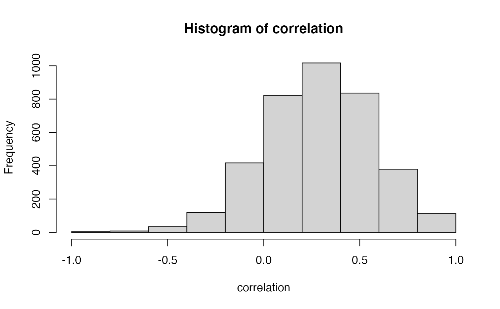
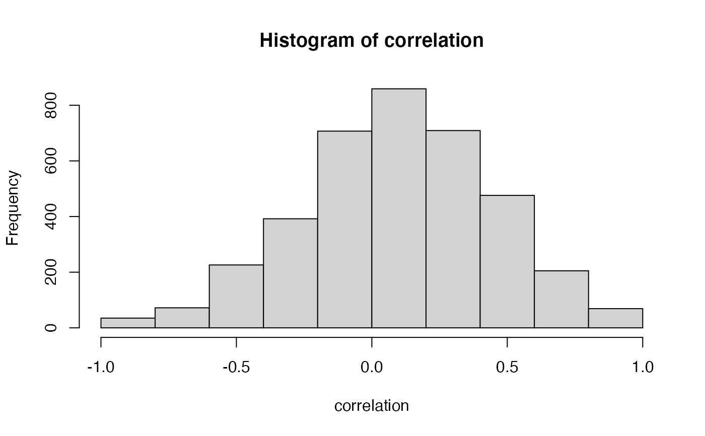

R/trend_cor.R
trend_cor.RdFully incorporates the uncertainty from the posterior of the DFA trend
trend_cor( rotated_modelfit, y, trend = 1, time_window = seq_len(length(y)), trend_samples = 100, stan_iter = 300, stan_chains = 1, ... )
| rotated_modelfit | Output from |
|---|---|
| y | A numeric vector to correlate with the DFA trend. Must be the same length as the DFA trend. |
| trend | A number corresponding to which trend to use, defaults to 1. |
| time_window | Indices indicating a time window slice to use in the correlation. Defaults to using the entire time window. Can be used to walk through the timeseries and test the cross correlations. |
| trend_samples | The number of samples from the trend posterior to use. A model will be run for each trend sample so this value shouldn't be too large. Defaults to 100. |
| stan_iter | The number of samples from the posterior with each Stan model run, defaults to 300. |
| stan_chains | The number of chains for each Stan model run, defaults to 1. |
| ... | Other arguments to pass to |
A numeric vector of samples from the correlation coefficient posterior.
Uses a sigma ~ half_t(3, 0, 2) prior on the residual standard
deviation and a uniform(-1, 1) prior on the correlation coefficient.
Fitted as a linear regression of y ~ x, where y represents the y
argument to trend_cor() and x represents the DFA trend, and both y
and x have been scaled by subtracting their means and dividing by their
standard deviations. Samples are drawn from the posterior of the trend and
repeatedly fed through the Stan regression to come up with a combined
posterior of the correlation.
set.seed(1) s <- sim_dfa(num_trends = 1, num_years = 15) m <- fit_dfa(y = s$y_sim, num_trends = 1, iter = 50, chains = 1)#> #> SAMPLING FOR MODEL 'dfa' NOW (CHAIN 1). #> Chain 1: #> Chain 1: Gradient evaluation took 4.7e-05 seconds #> Chain 1: 1000 transitions using 10 leapfrog steps per transition would take 0.47 seconds. #> Chain 1: Adjust your expectations accordingly! #> Chain 1: #> Chain 1: #> Chain 1: WARNING: There aren't enough warmup iterations to fit the #> Chain 1: three stages of adaptation as currently configured. #> Chain 1: Reducing each adaptation stage to 15%/75%/10% of #> Chain 1: the given number of warmup iterations: #> Chain 1: init_buffer = 3 #> Chain 1: adapt_window = 20 #> Chain 1: term_buffer = 2 #> Chain 1: #> Chain 1: Iteration: 1 / 50 [ 2%] (Warmup) #> Chain 1: Iteration: 5 / 50 [ 10%] (Warmup) #> Chain 1: Iteration: 10 / 50 [ 20%] (Warmup) #> Chain 1: Iteration: 15 / 50 [ 30%] (Warmup) #> Chain 1: Iteration: 20 / 50 [ 40%] (Warmup) #> Chain 1: Iteration: 25 / 50 [ 50%] (Warmup) #> Chain 1: Iteration: 26 / 50 [ 52%] (Sampling) #> Chain 1: Iteration: 30 / 50 [ 60%] (Sampling) #> Chain 1: Iteration: 35 / 50 [ 70%] (Sampling) #> Chain 1: Iteration: 40 / 50 [ 80%] (Sampling) #> Chain 1: Iteration: 45 / 50 [ 90%] (Sampling) #> Chain 1: Iteration: 50 / 50 [100%] (Sampling) #> Chain 1: #> Chain 1: Elapsed Time: 0.013934 seconds (Warm-up) #> Chain 1: 0.336041 seconds (Sampling) #> Chain 1: 0.349975 seconds (Total) #> Chain 1:#> Warning: There were 1 chains where the estimated Bayesian Fraction of Missing Information was low. See #> http://mc-stan.org/misc/warnings.html#bfmi-low#> Warning: Examine the pairs() plot to diagnose sampling problems#> Warning: The largest R-hat is 2.1, indicating chains have not mixed. #> Running the chains for more iterations may help. See #> http://mc-stan.org/misc/warnings.html#r-hat#> Warning: Bulk Effective Samples Size (ESS) is too low, indicating posterior means and medians may be unreliable. #> Running the chains for more iterations may help. See #> http://mc-stan.org/misc/warnings.html#bulk-ess#> Warning: Tail Effective Samples Size (ESS) is too low, indicating posterior variances and tail quantiles may be unreliable. #> Running the chains for more iterations may help. See #> http://mc-stan.org/misc/warnings.html#tail-ess#> Inference for the input samples (1 chains: each with iter = 25; warmup = 12): #> #> Q5 Q50 Q95 Mean SD Rhat Bulk_ESS Tail_ESS #> x[1,1] -1.6 -0.3 0.9 -0.4 0.9 1.30 6 13 #> x[1,2] -0.7 0.6 1.3 0.4 0.8 1.47 5 13 #> x[1,3] 0.0 1.1 1.9 0.9 0.7 1.71 4 13 #> x[1,4] 0.3 0.9 2.0 1.1 0.7 2.06 4 13 #> x[1,5] -0.2 0.5 1.4 0.6 0.6 2.06 4 13 #> x[1,6] -0.5 0.2 0.9 0.1 0.5 0.92 13 13 #> x[1,7] -0.3 0.2 1.1 0.4 0.5 1.71 8 13 #> x[1,8] -0.4 0.0 1.2 0.2 0.6 0.93 12 13 #> x[1,9] 0.0 0.4 0.8 0.4 0.3 1.45 5 13 #> x[1,10] -1.0 0.2 0.7 0.0 0.6 1.45 5 13 #> x[1,11] -2.2 -1.4 -0.6 -1.4 0.6 1.20 6 13 #> x[1,12] -2.5 -1.3 0.3 -1.2 1.1 2.06 4 13 #> x[1,13] -1.8 -0.9 0.8 -0.7 1.1 2.06 4 13 #> x[1,14] -0.8 -0.4 0.3 -0.3 0.4 0.96 13 13 #> x[1,15] -0.8 0.5 0.9 0.2 0.6 1.09 12 13 #> Z[1,1] -4.9 -0.9 7.8 0.0 6.2 1.87 13 13 #> Z[2,1] 0.0 0.5 1.1 0.5 0.4 1.33 13 13 #> Z[3,1] -1.7 -0.7 1.0 -0.5 0.9 1.71 11 13 #> Z[4,1] -0.7 -0.2 0.7 -0.1 0.5 1.71 9 13 #> log_lik[1] -4.5 -0.8 -0.5 -1.8 1.6 1.71 4 13 #> log_lik[2] -3.7 -1.0 -0.5 -1.5 1.2 1.39 5 13 #> log_lik[3] -3.7 -1.0 -0.5 -1.5 1.2 1.71 4 13 #> log_lik[4] -3.7 -1.1 -0.7 -1.6 1.1 1.07 10 13 #> log_lik[5] -3.8 -1.8 -0.7 -2.1 1.1 1.87 4 13 #> log_lik[6] -3.7 -0.9 -0.7 -1.6 1.1 1.48 5 13 #> log_lik[7] -3.7 -1.0 -0.5 -1.5 1.1 1.71 4 13 #> log_lik[8] -3.7 -1.5 -1.1 -2.0 0.9 1.18 7 13 #> log_lik[9] -3.7 -1.1 -0.4 -1.6 1.2 2.06 4 13 #> log_lik[10] -3.7 -0.6 -0.5 -1.4 1.2 1.71 4 13 #> log_lik[11] -3.7 -1.4 -0.5 -1.6 1.1 2.06 4 13 #> log_lik[12] -3.7 -0.8 -0.5 -1.4 1.2 1.71 5 13 #> log_lik[13] -3.9 -1.2 -0.4 -1.6 1.2 1.58 4 13 #> log_lik[14] -3.7 -2.3 -1.1 -2.3 0.9 1.30 5 13 #> log_lik[15] -3.7 -1.5 -0.5 -1.6 1.1 1.33 5 13 #> log_lik[16] -3.7 -0.8 -0.5 -1.3 1.2 1.87 4 13 #> log_lik[17] -3.7 -0.9 -0.5 -1.5 1.2 1.58 5 13 #> log_lik[18] -3.7 -0.8 -0.5 -1.3 1.2 1.30 5 13 #> log_lik[19] -3.7 -1.0 -0.5 -1.5 1.1 1.58 4 13 #> log_lik[20] -3.7 -1.2 -1.0 -1.7 1.0 1.08 8 13 #> log_lik[21] -3.8 -0.8 -0.4 -1.6 1.3 1.71 4 13 #> log_lik[22] -3.7 -0.8 -0.5 -1.4 1.2 1.58 4 13 #> log_lik[23] -3.7 -0.9 -0.5 -1.5 1.2 1.71 4 13 #> log_lik[24] -3.7 -0.7 -0.4 -1.3 1.2 2.06 4 13 #> log_lik[25] -4.1 -0.8 -0.4 -1.5 1.4 1.87 4 13 #> log_lik[26] -3.7 -0.8 -0.4 -1.3 1.2 2.06 4 13 #> log_lik[27] -3.7 -0.7 -0.4 -1.4 1.2 2.06 4 13 #> log_lik[28] -3.7 -0.6 -0.4 -1.3 1.2 1.87 4 13 #> log_lik[29] -3.7 -1.1 -0.6 -1.5 1.1 1.21 6 13 #> log_lik[30] -3.7 -0.9 -0.5 -1.4 1.2 1.48 5 13 #> log_lik[31] -3.7 -1.2 -0.7 -1.7 1.1 1.19 7 13 #> log_lik[32] -3.7 -0.6 -0.5 -1.3 1.2 1.58 4 13 #> log_lik[33] -3.8 -0.6 -0.4 -1.3 1.3 1.58 5 13 #> log_lik[34] -3.7 -1.2 -0.8 -1.6 1.0 1.08 8 13 #> log_lik[35] -3.7 -0.8 -0.5 -1.4 1.2 1.71 4 13 #> log_lik[36] -3.7 -0.9 -0.8 -1.5 1.1 1.06 8 13 #> log_lik[37] -3.7 -0.9 -0.5 -1.4 1.2 1.71 4 13 #> log_lik[38] -3.7 -0.8 -0.4 -1.3 1.2 1.71 4 13 #> log_lik[39] -3.7 -0.9 -0.5 -1.6 1.2 1.31 5 13 #> log_lik[40] -3.7 -1.0 -0.6 -1.4 1.1 1.71 4 13 #> log_lik[41] -4.6 -1.0 -0.4 -1.7 1.6 1.39 5 13 #> log_lik[42] -3.7 -2.1 -0.9 -2.2 0.9 1.45 5 13 #> log_lik[43] -4.3 -1.2 -0.5 -1.9 1.6 1.71 5 13 #> log_lik[44] -4.7 -3.4 -1.3 -3.3 1.2 1.05 13 13 #> log_lik[45] -4.0 -1.7 -0.5 -1.9 1.4 1.87 6 13 #> log_lik[46] -3.7 -0.7 -0.6 -1.5 1.2 1.58 6 13 #> log_lik[47] -3.7 -0.9 -0.5 -1.7 1.3 1.58 4 13 #> log_lik[48] -7.4 -4.9 -2.4 -4.7 1.9 1.05 13 13 #> log_lik[49] -4.0 -0.9 -0.5 -1.7 1.4 1.87 4 13 #> log_lik[50] -3.7 -1.2 -0.5 -1.6 1.1 2.06 4 13 #> log_lik[51] -3.7 -1.4 -0.5 -1.7 1.1 1.19 6 13 #> log_lik[52] -3.7 -0.9 -0.7 -1.5 1.1 1.71 4 13 #> log_lik[53] -3.8 -0.9 -0.5 -1.4 1.2 2.06 4 13 #> log_lik[54] -3.7 -0.8 -0.4 -1.3 1.2 1.58 4 13 #> log_lik[55] -3.7 -0.9 -0.5 -1.4 1.2 2.06 4 13 #> log_lik[56] -3.7 -2.2 -1.4 -2.4 0.9 1.45 8 13 #> log_lik[57] -5.0 -1.3 -0.6 -2.1 1.8 1.58 5 13 #> log_lik[58] -3.7 -2.3 -0.8 -2.2 1.1 0.98 10 13 #> log_lik[59] -4.1 -1.3 -0.5 -1.8 1.4 1.48 5 13 #> log_lik[60] -3.7 -2.0 -0.9 -2.1 1.0 1.71 8 13 #> xstar[1,1] -2.2 0.7 2.1 0.4 1.5 1.21 13 13 #> sigma[1] 0.6 0.7 15.9 3.5 5.7 1.58 4 13 #> lp__ -315.4 -60.3 -46.3 -110.6 108.8 2.06 4 13 #> #> For each parameter, Bulk_ESS and Tail_ESS are crude measures of #> effective sample size for bulk and tail quantities respectively (an ESS > 100 #> per chain is considered good), and Rhat is the potential scale reduction #> factor on rank normalized split chains (at convergence, Rhat <= 1.05).r <- rotate_trends(m) n_years <- ncol(r$trends[, 1, ]) fake_dat <- rnorm(n_years, 0, 1) correlation <- trend_cor(r, fake_dat, trend_samples = 25)#> #> SAMPLING FOR MODEL 'corr' NOW (CHAIN 1). #> Chain 1: #> Chain 1: Gradient evaluation took 1.4e-05 seconds #> Chain 1: 1000 transitions using 10 leapfrog steps per transition would take 0.14 seconds. #> Chain 1: Adjust your expectations accordingly! #> Chain 1: #> Chain 1: #> Chain 1: Iteration: 1 / 300 [ 0%] (Warmup) #> Chain 1: Iteration: 30 / 300 [ 10%] (Warmup) #> Chain 1: Iteration: 60 / 300 [ 20%] (Warmup) #> Chain 1: Iteration: 90 / 300 [ 30%] (Warmup) #> Chain 1: Iteration: 120 / 300 [ 40%] (Warmup) #> Chain 1: Iteration: 150 / 300 [ 50%] (Warmup) #> Chain 1: Iteration: 151 / 300 [ 50%] (Sampling) #> Chain 1: Iteration: 180 / 300 [ 60%] (Sampling) #> Chain 1: Iteration: 210 / 300 [ 70%] (Sampling) #> Chain 1: Iteration: 240 / 300 [ 80%] (Sampling) #> Chain 1: Iteration: 270 / 300 [ 90%] (Sampling) #> Chain 1: Iteration: 300 / 300 [100%] (Sampling) #> Chain 1: #> Chain 1: Elapsed Time: 0.004544 seconds (Warm-up) #> Chain 1: 0.003498 seconds (Sampling) #> Chain 1: 0.008042 seconds (Total) #> Chain 1:#> Warning: The largest R-hat is 1.09, indicating chains have not mixed. #> Running the chains for more iterations may help. See #> http://mc-stan.org/misc/warnings.html#r-hat#> Warning: Bulk Effective Samples Size (ESS) is too low, indicating posterior means and medians may be unreliable. #> Running the chains for more iterations may help. See #> http://mc-stan.org/misc/warnings.html#bulk-ess#> Warning: Tail Effective Samples Size (ESS) is too low, indicating posterior variances and tail quantiles may be unreliable. #> Running the chains for more iterations may help. See #> http://mc-stan.org/misc/warnings.html#tail-ess#> #> SAMPLING FOR MODEL 'corr' NOW (CHAIN 1). #> Chain 1: #> Chain 1: Gradient evaluation took 2.1e-05 seconds #> Chain 1: 1000 transitions using 10 leapfrog steps per transition would take 0.21 seconds. #> Chain 1: Adjust your expectations accordingly! #> Chain 1: #> Chain 1: #> Chain 1: Iteration: 1 / 300 [ 0%] (Warmup) #> Chain 1: Iteration: 30 / 300 [ 10%] (Warmup) #> Chain 1: Iteration: 60 / 300 [ 20%] (Warmup) #> Chain 1: Iteration: 90 / 300 [ 30%] (Warmup) #> Chain 1: Iteration: 120 / 300 [ 40%] (Warmup) #> Chain 1: Iteration: 150 / 300 [ 50%] (Warmup) #> Chain 1: Iteration: 151 / 300 [ 50%] (Sampling) #> Chain 1: Iteration: 180 / 300 [ 60%] (Sampling) #> Chain 1: Iteration: 210 / 300 [ 70%] (Sampling) #> Chain 1: Iteration: 240 / 300 [ 80%] (Sampling) #> Chain 1: Iteration: 270 / 300 [ 90%] (Sampling) #> Chain 1: Iteration: 300 / 300 [100%] (Sampling) #> Chain 1: #> Chain 1: Elapsed Time: 0.004347 seconds (Warm-up) #> Chain 1: 0.003288 seconds (Sampling) #> Chain 1: 0.007635 seconds (Total) #> Chain 1:#> Warning: Bulk Effective Samples Size (ESS) is too low, indicating posterior means and medians may be unreliable. #> Running the chains for more iterations may help. See #> http://mc-stan.org/misc/warnings.html#bulk-ess#> Warning: Tail Effective Samples Size (ESS) is too low, indicating posterior variances and tail quantiles may be unreliable. #> Running the chains for more iterations may help. See #> http://mc-stan.org/misc/warnings.html#tail-ess#> #> SAMPLING FOR MODEL 'corr' NOW (CHAIN 1). #> Chain 1: #> Chain 1: Gradient evaluation took 1.2e-05 seconds #> Chain 1: 1000 transitions using 10 leapfrog steps per transition would take 0.12 seconds. #> Chain 1: Adjust your expectations accordingly! #> Chain 1: #> Chain 1: #> Chain 1: Iteration: 1 / 300 [ 0%] (Warmup) #> Chain 1: Iteration: 30 / 300 [ 10%] (Warmup) #> Chain 1: Iteration: 60 / 300 [ 20%] (Warmup) #> Chain 1: Iteration: 90 / 300 [ 30%] (Warmup) #> Chain 1: Iteration: 120 / 300 [ 40%] (Warmup) #> Chain 1: Iteration: 150 / 300 [ 50%] (Warmup) #> Chain 1: Iteration: 151 / 300 [ 50%] (Sampling) #> Chain 1: Iteration: 180 / 300 [ 60%] (Sampling) #> Chain 1: Iteration: 210 / 300 [ 70%] (Sampling) #> Chain 1: Iteration: 240 / 300 [ 80%] (Sampling) #> Chain 1: Iteration: 270 / 300 [ 90%] (Sampling) #> Chain 1: Iteration: 300 / 300 [100%] (Sampling) #> Chain 1: #> Chain 1: Elapsed Time: 0.004338 seconds (Warm-up) #> Chain 1: 0.003 seconds (Sampling) #> Chain 1: 0.007338 seconds (Total) #> Chain 1:#> Warning: Bulk Effective Samples Size (ESS) is too low, indicating posterior means and medians may be unreliable. #> Running the chains for more iterations may help. See #> http://mc-stan.org/misc/warnings.html#bulk-ess#> Warning: Tail Effective Samples Size (ESS) is too low, indicating posterior variances and tail quantiles may be unreliable. #> Running the chains for more iterations may help. See #> http://mc-stan.org/misc/warnings.html#tail-ess#> #> SAMPLING FOR MODEL 'corr' NOW (CHAIN 1). #> Chain 1: #> Chain 1: Gradient evaluation took 1.3e-05 seconds #> Chain 1: 1000 transitions using 10 leapfrog steps per transition would take 0.13 seconds. #> Chain 1: Adjust your expectations accordingly! #> Chain 1: #> Chain 1: #> Chain 1: Iteration: 1 / 300 [ 0%] (Warmup) #> Chain 1: Iteration: 30 / 300 [ 10%] (Warmup) #> Chain 1: Iteration: 60 / 300 [ 20%] (Warmup) #> Chain 1: Iteration: 90 / 300 [ 30%] (Warmup) #> Chain 1: Iteration: 120 / 300 [ 40%] (Warmup) #> Chain 1: Iteration: 150 / 300 [ 50%] (Warmup) #> Chain 1: Iteration: 151 / 300 [ 50%] (Sampling) #> Chain 1: Iteration: 180 / 300 [ 60%] (Sampling) #> Chain 1: Iteration: 210 / 300 [ 70%] (Sampling) #> Chain 1: Iteration: 240 / 300 [ 80%] (Sampling) #> Chain 1: Iteration: 270 / 300 [ 90%] (Sampling) #> Chain 1: Iteration: 300 / 300 [100%] (Sampling) #> Chain 1: #> Chain 1: Elapsed Time: 0.004585 seconds (Warm-up) #> Chain 1: 0.003509 seconds (Sampling) #> Chain 1: 0.008094 seconds (Total) #> Chain 1:#> Warning: Bulk Effective Samples Size (ESS) is too low, indicating posterior means and medians may be unreliable. #> Running the chains for more iterations may help. See #> http://mc-stan.org/misc/warnings.html#bulk-ess#> Warning: Tail Effective Samples Size (ESS) is too low, indicating posterior variances and tail quantiles may be unreliable. #> Running the chains for more iterations may help. See #> http://mc-stan.org/misc/warnings.html#tail-ess#> #> SAMPLING FOR MODEL 'corr' NOW (CHAIN 1). #> Chain 1: #> Chain 1: Gradient evaluation took 1.2e-05 seconds #> Chain 1: 1000 transitions using 10 leapfrog steps per transition would take 0.12 seconds. #> Chain 1: Adjust your expectations accordingly! #> Chain 1: #> Chain 1: #> Chain 1: Iteration: 1 / 300 [ 0%] (Warmup) #> Chain 1: Iteration: 30 / 300 [ 10%] (Warmup) #> Chain 1: Iteration: 60 / 300 [ 20%] (Warmup) #> Chain 1: Iteration: 90 / 300 [ 30%] (Warmup) #> Chain 1: Iteration: 120 / 300 [ 40%] (Warmup) #> Chain 1: Iteration: 150 / 300 [ 50%] (Warmup) #> Chain 1: Iteration: 151 / 300 [ 50%] (Sampling) #> Chain 1: Iteration: 180 / 300 [ 60%] (Sampling) #> Chain 1: Iteration: 210 / 300 [ 70%] (Sampling) #> Chain 1: Iteration: 240 / 300 [ 80%] (Sampling) #> Chain 1: Iteration: 270 / 300 [ 90%] (Sampling) #> Chain 1: Iteration: 300 / 300 [100%] (Sampling) #> Chain 1: #> Chain 1: Elapsed Time: 0.004237 seconds (Warm-up) #> Chain 1: 0.002926 seconds (Sampling) #> Chain 1: 0.007163 seconds (Total) #> Chain 1:#> Warning: Bulk Effective Samples Size (ESS) is too low, indicating posterior means and medians may be unreliable. #> Running the chains for more iterations may help. See #> http://mc-stan.org/misc/warnings.html#bulk-ess#> Warning: Tail Effective Samples Size (ESS) is too low, indicating posterior variances and tail quantiles may be unreliable. #> Running the chains for more iterations may help. See #> http://mc-stan.org/misc/warnings.html#tail-ess#> #> SAMPLING FOR MODEL 'corr' NOW (CHAIN 1). #> Chain 1: #> Chain 1: Gradient evaluation took 1.2e-05 seconds #> Chain 1: 1000 transitions using 10 leapfrog steps per transition would take 0.12 seconds. #> Chain 1: Adjust your expectations accordingly! #> Chain 1: #> Chain 1: #> Chain 1: Iteration: 1 / 300 [ 0%] (Warmup) #> Chain 1: Iteration: 30 / 300 [ 10%] (Warmup) #> Chain 1: Iteration: 60 / 300 [ 20%] (Warmup) #> Chain 1: Iteration: 90 / 300 [ 30%] (Warmup) #> Chain 1: Iteration: 120 / 300 [ 40%] (Warmup) #> Chain 1: Iteration: 150 / 300 [ 50%] (Warmup) #> Chain 1: Iteration: 151 / 300 [ 50%] (Sampling) #> Chain 1: Iteration: 180 / 300 [ 60%] (Sampling) #> Chain 1: Iteration: 210 / 300 [ 70%] (Sampling) #> Chain 1: Iteration: 240 / 300 [ 80%] (Sampling) #> Chain 1: Iteration: 270 / 300 [ 90%] (Sampling) #> Chain 1: Iteration: 300 / 300 [100%] (Sampling) #> Chain 1: #> Chain 1: Elapsed Time: 0.004808 seconds (Warm-up) #> Chain 1: 0.003282 seconds (Sampling) #> Chain 1: 0.00809 seconds (Total) #> Chain 1:#> Warning: Bulk Effective Samples Size (ESS) is too low, indicating posterior means and medians may be unreliable. #> Running the chains for more iterations may help. See #> http://mc-stan.org/misc/warnings.html#bulk-ess#> Warning: Tail Effective Samples Size (ESS) is too low, indicating posterior variances and tail quantiles may be unreliable. #> Running the chains for more iterations may help. See #> http://mc-stan.org/misc/warnings.html#tail-ess#> #> SAMPLING FOR MODEL 'corr' NOW (CHAIN 1). #> Chain 1: #> Chain 1: Gradient evaluation took 1.2e-05 seconds #> Chain 1: 1000 transitions using 10 leapfrog steps per transition would take 0.12 seconds. #> Chain 1: Adjust your expectations accordingly! #> Chain 1: #> Chain 1: #> Chain 1: Iteration: 1 / 300 [ 0%] (Warmup) #> Chain 1: Iteration: 30 / 300 [ 10%] (Warmup) #> Chain 1: Iteration: 60 / 300 [ 20%] (Warmup) #> Chain 1: Iteration: 90 / 300 [ 30%] (Warmup) #> Chain 1: Iteration: 120 / 300 [ 40%] (Warmup) #> Chain 1: Iteration: 150 / 300 [ 50%] (Warmup) #> Chain 1: Iteration: 151 / 300 [ 50%] (Sampling) #> Chain 1: Iteration: 180 / 300 [ 60%] (Sampling) #> Chain 1: Iteration: 210 / 300 [ 70%] (Sampling) #> Chain 1: Iteration: 240 / 300 [ 80%] (Sampling) #> Chain 1: Iteration: 270 / 300 [ 90%] (Sampling) #> Chain 1: Iteration: 300 / 300 [100%] (Sampling) #> Chain 1: #> Chain 1: Elapsed Time: 0.004848 seconds (Warm-up) #> Chain 1: 0.003695 seconds (Sampling) #> Chain 1: 0.008543 seconds (Total) #> Chain 1:#> Warning: Bulk Effective Samples Size (ESS) is too low, indicating posterior means and medians may be unreliable. #> Running the chains for more iterations may help. See #> http://mc-stan.org/misc/warnings.html#bulk-ess#> Warning: Tail Effective Samples Size (ESS) is too low, indicating posterior variances and tail quantiles may be unreliable. #> Running the chains for more iterations may help. See #> http://mc-stan.org/misc/warnings.html#tail-ess#> #> SAMPLING FOR MODEL 'corr' NOW (CHAIN 1). #> Chain 1: #> Chain 1: Gradient evaluation took 1.2e-05 seconds #> Chain 1: 1000 transitions using 10 leapfrog steps per transition would take 0.12 seconds. #> Chain 1: Adjust your expectations accordingly! #> Chain 1: #> Chain 1: #> Chain 1: Iteration: 1 / 300 [ 0%] (Warmup) #> Chain 1: Iteration: 30 / 300 [ 10%] (Warmup) #> Chain 1: Iteration: 60 / 300 [ 20%] (Warmup) #> Chain 1: Iteration: 90 / 300 [ 30%] (Warmup) #> Chain 1: Iteration: 120 / 300 [ 40%] (Warmup) #> Chain 1: Iteration: 150 / 300 [ 50%] (Warmup) #> Chain 1: Iteration: 151 / 300 [ 50%] (Sampling) #> Chain 1: Iteration: 180 / 300 [ 60%] (Sampling) #> Chain 1: Iteration: 210 / 300 [ 70%] (Sampling) #> Chain 1: Iteration: 240 / 300 [ 80%] (Sampling) #> Chain 1: Iteration: 270 / 300 [ 90%] (Sampling) #> Chain 1: Iteration: 300 / 300 [100%] (Sampling) #> Chain 1: #> Chain 1: Elapsed Time: 0.004569 seconds (Warm-up) #> Chain 1: 0.002796 seconds (Sampling) #> Chain 1: 0.007365 seconds (Total) #> Chain 1:#> Warning: Bulk Effective Samples Size (ESS) is too low, indicating posterior means and medians may be unreliable. #> Running the chains for more iterations may help. See #> http://mc-stan.org/misc/warnings.html#bulk-ess#> Warning: Tail Effective Samples Size (ESS) is too low, indicating posterior variances and tail quantiles may be unreliable. #> Running the chains for more iterations may help. See #> http://mc-stan.org/misc/warnings.html#tail-ess#> #> SAMPLING FOR MODEL 'corr' NOW (CHAIN 1). #> Chain 1: #> Chain 1: Gradient evaluation took 1.2e-05 seconds #> Chain 1: 1000 transitions using 10 leapfrog steps per transition would take 0.12 seconds. #> Chain 1: Adjust your expectations accordingly! #> Chain 1: #> Chain 1: #> Chain 1: Iteration: 1 / 300 [ 0%] (Warmup) #> Chain 1: Iteration: 30 / 300 [ 10%] (Warmup) #> Chain 1: Iteration: 60 / 300 [ 20%] (Warmup) #> Chain 1: Iteration: 90 / 300 [ 30%] (Warmup) #> Chain 1: Iteration: 120 / 300 [ 40%] (Warmup) #> Chain 1: Iteration: 150 / 300 [ 50%] (Warmup) #> Chain 1: Iteration: 151 / 300 [ 50%] (Sampling) #> Chain 1: Iteration: 180 / 300 [ 60%] (Sampling) #> Chain 1: Iteration: 210 / 300 [ 70%] (Sampling) #> Chain 1: Iteration: 240 / 300 [ 80%] (Sampling) #> Chain 1: Iteration: 270 / 300 [ 90%] (Sampling) #> Chain 1: Iteration: 300 / 300 [100%] (Sampling) #> Chain 1: #> Chain 1: Elapsed Time: 0.004959 seconds (Warm-up) #> Chain 1: 0.003173 seconds (Sampling) #> Chain 1: 0.008132 seconds (Total) #> Chain 1:#> Warning: Bulk Effective Samples Size (ESS) is too low, indicating posterior means and medians may be unreliable. #> Running the chains for more iterations may help. See #> http://mc-stan.org/misc/warnings.html#bulk-ess#> Warning: Tail Effective Samples Size (ESS) is too low, indicating posterior variances and tail quantiles may be unreliable. #> Running the chains for more iterations may help. See #> http://mc-stan.org/misc/warnings.html#tail-ess#> #> SAMPLING FOR MODEL 'corr' NOW (CHAIN 1). #> Chain 1: #> Chain 1: Gradient evaluation took 1.2e-05 seconds #> Chain 1: 1000 transitions using 10 leapfrog steps per transition would take 0.12 seconds. #> Chain 1: Adjust your expectations accordingly! #> Chain 1: #> Chain 1: #> Chain 1: Iteration: 1 / 300 [ 0%] (Warmup) #> Chain 1: Iteration: 30 / 300 [ 10%] (Warmup) #> Chain 1: Iteration: 60 / 300 [ 20%] (Warmup) #> Chain 1: Iteration: 90 / 300 [ 30%] (Warmup) #> Chain 1: Iteration: 120 / 300 [ 40%] (Warmup) #> Chain 1: Iteration: 150 / 300 [ 50%] (Warmup) #> Chain 1: Iteration: 151 / 300 [ 50%] (Sampling) #> Chain 1: Iteration: 180 / 300 [ 60%] (Sampling) #> Chain 1: Iteration: 210 / 300 [ 70%] (Sampling) #> Chain 1: Iteration: 240 / 300 [ 80%] (Sampling) #> Chain 1: Iteration: 270 / 300 [ 90%] (Sampling) #> Chain 1: Iteration: 300 / 300 [100%] (Sampling) #> Chain 1: #> Chain 1: Elapsed Time: 0.004294 seconds (Warm-up) #> Chain 1: 0.003065 seconds (Sampling) #> Chain 1: 0.007359 seconds (Total) #> Chain 1:#> Warning: Bulk Effective Samples Size (ESS) is too low, indicating posterior means and medians may be unreliable. #> Running the chains for more iterations may help. See #> http://mc-stan.org/misc/warnings.html#bulk-ess#> Warning: Tail Effective Samples Size (ESS) is too low, indicating posterior variances and tail quantiles may be unreliable. #> Running the chains for more iterations may help. See #> http://mc-stan.org/misc/warnings.html#tail-ess#> #> SAMPLING FOR MODEL 'corr' NOW (CHAIN 1). #> Chain 1: #> Chain 1: Gradient evaluation took 1.2e-05 seconds #> Chain 1: 1000 transitions using 10 leapfrog steps per transition would take 0.12 seconds. #> Chain 1: Adjust your expectations accordingly! #> Chain 1: #> Chain 1: #> Chain 1: Iteration: 1 / 300 [ 0%] (Warmup) #> Chain 1: Iteration: 30 / 300 [ 10%] (Warmup) #> Chain 1: Iteration: 60 / 300 [ 20%] (Warmup) #> Chain 1: Iteration: 90 / 300 [ 30%] (Warmup) #> Chain 1: Iteration: 120 / 300 [ 40%] (Warmup) #> Chain 1: Iteration: 150 / 300 [ 50%] (Warmup) #> Chain 1: Iteration: 151 / 300 [ 50%] (Sampling) #> Chain 1: Iteration: 180 / 300 [ 60%] (Sampling) #> Chain 1: Iteration: 210 / 300 [ 70%] (Sampling) #> Chain 1: Iteration: 240 / 300 [ 80%] (Sampling) #> Chain 1: Iteration: 270 / 300 [ 90%] (Sampling) #> Chain 1: Iteration: 300 / 300 [100%] (Sampling) #> Chain 1: #> Chain 1: Elapsed Time: 0.004704 seconds (Warm-up) #> Chain 1: 0.003224 seconds (Sampling) #> Chain 1: 0.007928 seconds (Total) #> Chain 1:#> Warning: Bulk Effective Samples Size (ESS) is too low, indicating posterior means and medians may be unreliable. #> Running the chains for more iterations may help. See #> http://mc-stan.org/misc/warnings.html#bulk-ess#> Warning: Tail Effective Samples Size (ESS) is too low, indicating posterior variances and tail quantiles may be unreliable. #> Running the chains for more iterations may help. See #> http://mc-stan.org/misc/warnings.html#tail-ess#> #> SAMPLING FOR MODEL 'corr' NOW (CHAIN 1). #> Chain 1: #> Chain 1: Gradient evaluation took 1e-05 seconds #> Chain 1: 1000 transitions using 10 leapfrog steps per transition would take 0.1 seconds. #> Chain 1: Adjust your expectations accordingly! #> Chain 1: #> Chain 1: #> Chain 1: Iteration: 1 / 300 [ 0%] (Warmup) #> Chain 1: Iteration: 30 / 300 [ 10%] (Warmup) #> Chain 1: Iteration: 60 / 300 [ 20%] (Warmup) #> Chain 1: Iteration: 90 / 300 [ 30%] (Warmup) #> Chain 1: Iteration: 120 / 300 [ 40%] (Warmup) #> Chain 1: Iteration: 150 / 300 [ 50%] (Warmup) #> Chain 1: Iteration: 151 / 300 [ 50%] (Sampling) #> Chain 1: Iteration: 180 / 300 [ 60%] (Sampling) #> Chain 1: Iteration: 210 / 300 [ 70%] (Sampling) #> Chain 1: Iteration: 240 / 300 [ 80%] (Sampling) #> Chain 1: Iteration: 270 / 300 [ 90%] (Sampling) #> Chain 1: Iteration: 300 / 300 [100%] (Sampling) #> Chain 1: #> Chain 1: Elapsed Time: 0.00389 seconds (Warm-up) #> Chain 1: 0.003155 seconds (Sampling) #> Chain 1: 0.007045 seconds (Total) #> Chain 1:#> Warning: The largest R-hat is 1.12, indicating chains have not mixed. #> Running the chains for more iterations may help. See #> http://mc-stan.org/misc/warnings.html#r-hat#> Warning: Bulk Effective Samples Size (ESS) is too low, indicating posterior means and medians may be unreliable. #> Running the chains for more iterations may help. See #> http://mc-stan.org/misc/warnings.html#bulk-ess#> Warning: Tail Effective Samples Size (ESS) is too low, indicating posterior variances and tail quantiles may be unreliable. #> Running the chains for more iterations may help. See #> http://mc-stan.org/misc/warnings.html#tail-ess#> #> SAMPLING FOR MODEL 'corr' NOW (CHAIN 1). #> Chain 1: #> Chain 1: Gradient evaluation took 1e-05 seconds #> Chain 1: 1000 transitions using 10 leapfrog steps per transition would take 0.1 seconds. #> Chain 1: Adjust your expectations accordingly! #> Chain 1: #> Chain 1: #> Chain 1: Iteration: 1 / 300 [ 0%] (Warmup) #> Chain 1: Iteration: 30 / 300 [ 10%] (Warmup) #> Chain 1: Iteration: 60 / 300 [ 20%] (Warmup) #> Chain 1: Iteration: 90 / 300 [ 30%] (Warmup) #> Chain 1: Iteration: 120 / 300 [ 40%] (Warmup) #> Chain 1: Iteration: 150 / 300 [ 50%] (Warmup) #> Chain 1: Iteration: 151 / 300 [ 50%] (Sampling) #> Chain 1: Iteration: 180 / 300 [ 60%] (Sampling) #> Chain 1: Iteration: 210 / 300 [ 70%] (Sampling) #> Chain 1: Iteration: 240 / 300 [ 80%] (Sampling) #> Chain 1: Iteration: 270 / 300 [ 90%] (Sampling) #> Chain 1: Iteration: 300 / 300 [100%] (Sampling) #> Chain 1: #> Chain 1: Elapsed Time: 0.004508 seconds (Warm-up) #> Chain 1: 0.003334 seconds (Sampling) #> Chain 1: 0.007842 seconds (Total) #> Chain 1:#> Warning: Bulk Effective Samples Size (ESS) is too low, indicating posterior means and medians may be unreliable. #> Running the chains for more iterations may help. See #> http://mc-stan.org/misc/warnings.html#bulk-ess#> Warning: Tail Effective Samples Size (ESS) is too low, indicating posterior variances and tail quantiles may be unreliable. #> Running the chains for more iterations may help. See #> http://mc-stan.org/misc/warnings.html#tail-ess#> #> SAMPLING FOR MODEL 'corr' NOW (CHAIN 1). #> Chain 1: #> Chain 1: Gradient evaluation took 1.1e-05 seconds #> Chain 1: 1000 transitions using 10 leapfrog steps per transition would take 0.11 seconds. #> Chain 1: Adjust your expectations accordingly! #> Chain 1: #> Chain 1: #> Chain 1: Iteration: 1 / 300 [ 0%] (Warmup) #> Chain 1: Iteration: 30 / 300 [ 10%] (Warmup) #> Chain 1: Iteration: 60 / 300 [ 20%] (Warmup) #> Chain 1: Iteration: 90 / 300 [ 30%] (Warmup) #> Chain 1: Iteration: 120 / 300 [ 40%] (Warmup) #> Chain 1: Iteration: 150 / 300 [ 50%] (Warmup) #> Chain 1: Iteration: 151 / 300 [ 50%] (Sampling) #> Chain 1: Iteration: 180 / 300 [ 60%] (Sampling) #> Chain 1: Iteration: 210 / 300 [ 70%] (Sampling) #> Chain 1: Iteration: 240 / 300 [ 80%] (Sampling) #> Chain 1: Iteration: 270 / 300 [ 90%] (Sampling) #> Chain 1: Iteration: 300 / 300 [100%] (Sampling) #> Chain 1: #> Chain 1: Elapsed Time: 0.004178 seconds (Warm-up) #> Chain 1: 0.002711 seconds (Sampling) #> Chain 1: 0.006889 seconds (Total) #> Chain 1:#> Warning: Bulk Effective Samples Size (ESS) is too low, indicating posterior means and medians may be unreliable. #> Running the chains for more iterations may help. See #> http://mc-stan.org/misc/warnings.html#bulk-ess#> Warning: Tail Effective Samples Size (ESS) is too low, indicating posterior variances and tail quantiles may be unreliable. #> Running the chains for more iterations may help. See #> http://mc-stan.org/misc/warnings.html#tail-ess#> #> SAMPLING FOR MODEL 'corr' NOW (CHAIN 1). #> Chain 1: #> Chain 1: Gradient evaluation took 1.2e-05 seconds #> Chain 1: 1000 transitions using 10 leapfrog steps per transition would take 0.12 seconds. #> Chain 1: Adjust your expectations accordingly! #> Chain 1: #> Chain 1: #> Chain 1: Iteration: 1 / 300 [ 0%] (Warmup) #> Chain 1: Iteration: 30 / 300 [ 10%] (Warmup) #> Chain 1: Iteration: 60 / 300 [ 20%] (Warmup) #> Chain 1: Iteration: 90 / 300 [ 30%] (Warmup) #> Chain 1: Iteration: 120 / 300 [ 40%] (Warmup) #> Chain 1: Iteration: 150 / 300 [ 50%] (Warmup) #> Chain 1: Iteration: 151 / 300 [ 50%] (Sampling) #> Chain 1: Iteration: 180 / 300 [ 60%] (Sampling) #> Chain 1: Iteration: 210 / 300 [ 70%] (Sampling) #> Chain 1: Iteration: 240 / 300 [ 80%] (Sampling) #> Chain 1: Iteration: 270 / 300 [ 90%] (Sampling) #> Chain 1: Iteration: 300 / 300 [100%] (Sampling) #> Chain 1: #> Chain 1: Elapsed Time: 0.004564 seconds (Warm-up) #> Chain 1: 0.003374 seconds (Sampling) #> Chain 1: 0.007938 seconds (Total) #> Chain 1:#> Warning: Bulk Effective Samples Size (ESS) is too low, indicating posterior means and medians may be unreliable. #> Running the chains for more iterations may help. See #> http://mc-stan.org/misc/warnings.html#bulk-ess#> Warning: Tail Effective Samples Size (ESS) is too low, indicating posterior variances and tail quantiles may be unreliable. #> Running the chains for more iterations may help. See #> http://mc-stan.org/misc/warnings.html#tail-ess#> #> SAMPLING FOR MODEL 'corr' NOW (CHAIN 1). #> Chain 1: #> Chain 1: Gradient evaluation took 1e-05 seconds #> Chain 1: 1000 transitions using 10 leapfrog steps per transition would take 0.1 seconds. #> Chain 1: Adjust your expectations accordingly! #> Chain 1: #> Chain 1: #> Chain 1: Iteration: 1 / 300 [ 0%] (Warmup) #> Chain 1: Iteration: 30 / 300 [ 10%] (Warmup) #> Chain 1: Iteration: 60 / 300 [ 20%] (Warmup) #> Chain 1: Iteration: 90 / 300 [ 30%] (Warmup) #> Chain 1: Iteration: 120 / 300 [ 40%] (Warmup) #> Chain 1: Iteration: 150 / 300 [ 50%] (Warmup) #> Chain 1: Iteration: 151 / 300 [ 50%] (Sampling) #> Chain 1: Iteration: 180 / 300 [ 60%] (Sampling) #> Chain 1: Iteration: 210 / 300 [ 70%] (Sampling) #> Chain 1: Iteration: 240 / 300 [ 80%] (Sampling) #> Chain 1: Iteration: 270 / 300 [ 90%] (Sampling) #> Chain 1: Iteration: 300 / 300 [100%] (Sampling) #> Chain 1: #> Chain 1: Elapsed Time: 0.004256 seconds (Warm-up) #> Chain 1: 0.003284 seconds (Sampling) #> Chain 1: 0.00754 seconds (Total) #> Chain 1:#> Warning: Bulk Effective Samples Size (ESS) is too low, indicating posterior means and medians may be unreliable. #> Running the chains for more iterations may help. See #> http://mc-stan.org/misc/warnings.html#bulk-ess#> Warning: Tail Effective Samples Size (ESS) is too low, indicating posterior variances and tail quantiles may be unreliable. #> Running the chains for more iterations may help. See #> http://mc-stan.org/misc/warnings.html#tail-ess#> #> SAMPLING FOR MODEL 'corr' NOW (CHAIN 1). #> Chain 1: #> Chain 1: Gradient evaluation took 1.2e-05 seconds #> Chain 1: 1000 transitions using 10 leapfrog steps per transition would take 0.12 seconds. #> Chain 1: Adjust your expectations accordingly! #> Chain 1: #> Chain 1: #> Chain 1: Iteration: 1 / 300 [ 0%] (Warmup) #> Chain 1: Iteration: 30 / 300 [ 10%] (Warmup) #> Chain 1: Iteration: 60 / 300 [ 20%] (Warmup) #> Chain 1: Iteration: 90 / 300 [ 30%] (Warmup) #> Chain 1: Iteration: 120 / 300 [ 40%] (Warmup) #> Chain 1: Iteration: 150 / 300 [ 50%] (Warmup) #> Chain 1: Iteration: 151 / 300 [ 50%] (Sampling) #> Chain 1: Iteration: 180 / 300 [ 60%] (Sampling) #> Chain 1: Iteration: 210 / 300 [ 70%] (Sampling) #> Chain 1: Iteration: 240 / 300 [ 80%] (Sampling) #> Chain 1: Iteration: 270 / 300 [ 90%] (Sampling) #> Chain 1: Iteration: 300 / 300 [100%] (Sampling) #> Chain 1: #> Chain 1: Elapsed Time: 0.004799 seconds (Warm-up) #> Chain 1: 0.002706 seconds (Sampling) #> Chain 1: 0.007505 seconds (Total) #> Chain 1:#> Warning: Bulk Effective Samples Size (ESS) is too low, indicating posterior means and medians may be unreliable. #> Running the chains for more iterations may help. See #> http://mc-stan.org/misc/warnings.html#bulk-ess#> Warning: Tail Effective Samples Size (ESS) is too low, indicating posterior variances and tail quantiles may be unreliable. #> Running the chains for more iterations may help. See #> http://mc-stan.org/misc/warnings.html#tail-ess#> #> SAMPLING FOR MODEL 'corr' NOW (CHAIN 1). #> Chain 1: #> Chain 1: Gradient evaluation took 1.1e-05 seconds #> Chain 1: 1000 transitions using 10 leapfrog steps per transition would take 0.11 seconds. #> Chain 1: Adjust your expectations accordingly! #> Chain 1: #> Chain 1: #> Chain 1: Iteration: 1 / 300 [ 0%] (Warmup) #> Chain 1: Iteration: 30 / 300 [ 10%] (Warmup) #> Chain 1: Iteration: 60 / 300 [ 20%] (Warmup) #> Chain 1: Iteration: 90 / 300 [ 30%] (Warmup) #> Chain 1: Iteration: 120 / 300 [ 40%] (Warmup) #> Chain 1: Iteration: 150 / 300 [ 50%] (Warmup) #> Chain 1: Iteration: 151 / 300 [ 50%] (Sampling) #> Chain 1: Iteration: 180 / 300 [ 60%] (Sampling) #> Chain 1: Iteration: 210 / 300 [ 70%] (Sampling) #> Chain 1: Iteration: 240 / 300 [ 80%] (Sampling) #> Chain 1: Iteration: 270 / 300 [ 90%] (Sampling) #> Chain 1: Iteration: 300 / 300 [100%] (Sampling) #> Chain 1: #> Chain 1: Elapsed Time: 0.003838 seconds (Warm-up) #> Chain 1: 0.003221 seconds (Sampling) #> Chain 1: 0.007059 seconds (Total) #> Chain 1:#> Warning: Bulk Effective Samples Size (ESS) is too low, indicating posterior means and medians may be unreliable. #> Running the chains for more iterations may help. See #> http://mc-stan.org/misc/warnings.html#bulk-ess#> Warning: Tail Effective Samples Size (ESS) is too low, indicating posterior variances and tail quantiles may be unreliable. #> Running the chains for more iterations may help. See #> http://mc-stan.org/misc/warnings.html#tail-ess#> #> SAMPLING FOR MODEL 'corr' NOW (CHAIN 1). #> Chain 1: #> Chain 1: Gradient evaluation took 1.2e-05 seconds #> Chain 1: 1000 transitions using 10 leapfrog steps per transition would take 0.12 seconds. #> Chain 1: Adjust your expectations accordingly! #> Chain 1: #> Chain 1: #> Chain 1: Iteration: 1 / 300 [ 0%] (Warmup) #> Chain 1: Iteration: 30 / 300 [ 10%] (Warmup) #> Chain 1: Iteration: 60 / 300 [ 20%] (Warmup) #> Chain 1: Iteration: 90 / 300 [ 30%] (Warmup) #> Chain 1: Iteration: 120 / 300 [ 40%] (Warmup) #> Chain 1: Iteration: 150 / 300 [ 50%] (Warmup) #> Chain 1: Iteration: 151 / 300 [ 50%] (Sampling) #> Chain 1: Iteration: 180 / 300 [ 60%] (Sampling) #> Chain 1: Iteration: 210 / 300 [ 70%] (Sampling) #> Chain 1: Iteration: 240 / 300 [ 80%] (Sampling) #> Chain 1: Iteration: 270 / 300 [ 90%] (Sampling) #> Chain 1: Iteration: 300 / 300 [100%] (Sampling) #> Chain 1: #> Chain 1: Elapsed Time: 0.004092 seconds (Warm-up) #> Chain 1: 0.002873 seconds (Sampling) #> Chain 1: 0.006965 seconds (Total) #> Chain 1:#> Warning: Bulk Effective Samples Size (ESS) is too low, indicating posterior means and medians may be unreliable. #> Running the chains for more iterations may help. See #> http://mc-stan.org/misc/warnings.html#bulk-ess#> Warning: Tail Effective Samples Size (ESS) is too low, indicating posterior variances and tail quantiles may be unreliable. #> Running the chains for more iterations may help. See #> http://mc-stan.org/misc/warnings.html#tail-ess#> #> SAMPLING FOR MODEL 'corr' NOW (CHAIN 1). #> Chain 1: #> Chain 1: Gradient evaluation took 1.1e-05 seconds #> Chain 1: 1000 transitions using 10 leapfrog steps per transition would take 0.11 seconds. #> Chain 1: Adjust your expectations accordingly! #> Chain 1: #> Chain 1: #> Chain 1: Iteration: 1 / 300 [ 0%] (Warmup) #> Chain 1: Iteration: 30 / 300 [ 10%] (Warmup) #> Chain 1: Iteration: 60 / 300 [ 20%] (Warmup) #> Chain 1: Iteration: 90 / 300 [ 30%] (Warmup) #> Chain 1: Iteration: 120 / 300 [ 40%] (Warmup) #> Chain 1: Iteration: 150 / 300 [ 50%] (Warmup) #> Chain 1: Iteration: 151 / 300 [ 50%] (Sampling) #> Chain 1: Iteration: 180 / 300 [ 60%] (Sampling) #> Chain 1: Iteration: 210 / 300 [ 70%] (Sampling) #> Chain 1: Iteration: 240 / 300 [ 80%] (Sampling) #> Chain 1: Iteration: 270 / 300 [ 90%] (Sampling) #> Chain 1: Iteration: 300 / 300 [100%] (Sampling) #> Chain 1: #> Chain 1: Elapsed Time: 0.003949 seconds (Warm-up) #> Chain 1: 0.003276 seconds (Sampling) #> Chain 1: 0.007225 seconds (Total) #> Chain 1:#> Warning: Bulk Effective Samples Size (ESS) is too low, indicating posterior means and medians may be unreliable. #> Running the chains for more iterations may help. See #> http://mc-stan.org/misc/warnings.html#bulk-ess#> Warning: Tail Effective Samples Size (ESS) is too low, indicating posterior variances and tail quantiles may be unreliable. #> Running the chains for more iterations may help. See #> http://mc-stan.org/misc/warnings.html#tail-ess#> #> SAMPLING FOR MODEL 'corr' NOW (CHAIN 1). #> Chain 1: #> Chain 1: Gradient evaluation took 1.2e-05 seconds #> Chain 1: 1000 transitions using 10 leapfrog steps per transition would take 0.12 seconds. #> Chain 1: Adjust your expectations accordingly! #> Chain 1: #> Chain 1: #> Chain 1: Iteration: 1 / 300 [ 0%] (Warmup) #> Chain 1: Iteration: 30 / 300 [ 10%] (Warmup) #> Chain 1: Iteration: 60 / 300 [ 20%] (Warmup) #> Chain 1: Iteration: 90 / 300 [ 30%] (Warmup) #> Chain 1: Iteration: 120 / 300 [ 40%] (Warmup) #> Chain 1: Iteration: 150 / 300 [ 50%] (Warmup) #> Chain 1: Iteration: 151 / 300 [ 50%] (Sampling) #> Chain 1: Iteration: 180 / 300 [ 60%] (Sampling) #> Chain 1: Iteration: 210 / 300 [ 70%] (Sampling) #> Chain 1: Iteration: 240 / 300 [ 80%] (Sampling) #> Chain 1: Iteration: 270 / 300 [ 90%] (Sampling) #> Chain 1: Iteration: 300 / 300 [100%] (Sampling) #> Chain 1: #> Chain 1: Elapsed Time: 0.004244 seconds (Warm-up) #> Chain 1: 0.003286 seconds (Sampling) #> Chain 1: 0.00753 seconds (Total) #> Chain 1:#> Warning: Bulk Effective Samples Size (ESS) is too low, indicating posterior means and medians may be unreliable. #> Running the chains for more iterations may help. See #> http://mc-stan.org/misc/warnings.html#bulk-ess#> Warning: Tail Effective Samples Size (ESS) is too low, indicating posterior variances and tail quantiles may be unreliable. #> Running the chains for more iterations may help. See #> http://mc-stan.org/misc/warnings.html#tail-ess#> #> SAMPLING FOR MODEL 'corr' NOW (CHAIN 1). #> Chain 1: #> Chain 1: Gradient evaluation took 1.1e-05 seconds #> Chain 1: 1000 transitions using 10 leapfrog steps per transition would take 0.11 seconds. #> Chain 1: Adjust your expectations accordingly! #> Chain 1: #> Chain 1: #> Chain 1: Iteration: 1 / 300 [ 0%] (Warmup) #> Chain 1: Iteration: 30 / 300 [ 10%] (Warmup) #> Chain 1: Iteration: 60 / 300 [ 20%] (Warmup) #> Chain 1: Iteration: 90 / 300 [ 30%] (Warmup) #> Chain 1: Iteration: 120 / 300 [ 40%] (Warmup) #> Chain 1: Iteration: 150 / 300 [ 50%] (Warmup) #> Chain 1: Iteration: 151 / 300 [ 50%] (Sampling) #> Chain 1: Iteration: 180 / 300 [ 60%] (Sampling) #> Chain 1: Iteration: 210 / 300 [ 70%] (Sampling) #> Chain 1: Iteration: 240 / 300 [ 80%] (Sampling) #> Chain 1: Iteration: 270 / 300 [ 90%] (Sampling) #> Chain 1: Iteration: 300 / 300 [100%] (Sampling) #> Chain 1: #> Chain 1: Elapsed Time: 0.004223 seconds (Warm-up) #> Chain 1: 0.003323 seconds (Sampling) #> Chain 1: 0.007546 seconds (Total) #> Chain 1:#> Warning: Bulk Effective Samples Size (ESS) is too low, indicating posterior means and medians may be unreliable. #> Running the chains for more iterations may help. See #> http://mc-stan.org/misc/warnings.html#bulk-ess#> Warning: Tail Effective Samples Size (ESS) is too low, indicating posterior variances and tail quantiles may be unreliable. #> Running the chains for more iterations may help. See #> http://mc-stan.org/misc/warnings.html#tail-ess#> #> SAMPLING FOR MODEL 'corr' NOW (CHAIN 1). #> Chain 1: #> Chain 1: Gradient evaluation took 1.1e-05 seconds #> Chain 1: 1000 transitions using 10 leapfrog steps per transition would take 0.11 seconds. #> Chain 1: Adjust your expectations accordingly! #> Chain 1: #> Chain 1: #> Chain 1: Iteration: 1 / 300 [ 0%] (Warmup) #> Chain 1: Iteration: 30 / 300 [ 10%] (Warmup) #> Chain 1: Iteration: 60 / 300 [ 20%] (Warmup) #> Chain 1: Iteration: 90 / 300 [ 30%] (Warmup) #> Chain 1: Iteration: 120 / 300 [ 40%] (Warmup) #> Chain 1: Iteration: 150 / 300 [ 50%] (Warmup) #> Chain 1: Iteration: 151 / 300 [ 50%] (Sampling) #> Chain 1: Iteration: 180 / 300 [ 60%] (Sampling) #> Chain 1: Iteration: 210 / 300 [ 70%] (Sampling) #> Chain 1: Iteration: 240 / 300 [ 80%] (Sampling) #> Chain 1: Iteration: 270 / 300 [ 90%] (Sampling) #> Chain 1: Iteration: 300 / 300 [100%] (Sampling) #> Chain 1: #> Chain 1: Elapsed Time: 0.005718 seconds (Warm-up) #> Chain 1: 0.002958 seconds (Sampling) #> Chain 1: 0.008676 seconds (Total) #> Chain 1:#> Warning: Bulk Effective Samples Size (ESS) is too low, indicating posterior means and medians may be unreliable. #> Running the chains for more iterations may help. See #> http://mc-stan.org/misc/warnings.html#bulk-ess#> Warning: Tail Effective Samples Size (ESS) is too low, indicating posterior variances and tail quantiles may be unreliable. #> Running the chains for more iterations may help. See #> http://mc-stan.org/misc/warnings.html#tail-ess#> #> SAMPLING FOR MODEL 'corr' NOW (CHAIN 1). #> Chain 1: #> Chain 1: Gradient evaluation took 1.2e-05 seconds #> Chain 1: 1000 transitions using 10 leapfrog steps per transition would take 0.12 seconds. #> Chain 1: Adjust your expectations accordingly! #> Chain 1: #> Chain 1: #> Chain 1: Iteration: 1 / 300 [ 0%] (Warmup) #> Chain 1: Iteration: 30 / 300 [ 10%] (Warmup) #> Chain 1: Iteration: 60 / 300 [ 20%] (Warmup) #> Chain 1: Iteration: 90 / 300 [ 30%] (Warmup) #> Chain 1: Iteration: 120 / 300 [ 40%] (Warmup) #> Chain 1: Iteration: 150 / 300 [ 50%] (Warmup) #> Chain 1: Iteration: 151 / 300 [ 50%] (Sampling) #> Chain 1: Iteration: 180 / 300 [ 60%] (Sampling) #> Chain 1: Iteration: 210 / 300 [ 70%] (Sampling) #> Chain 1: Iteration: 240 / 300 [ 80%] (Sampling) #> Chain 1: Iteration: 270 / 300 [ 90%] (Sampling) #> Chain 1: Iteration: 300 / 300 [100%] (Sampling) #> Chain 1: #> Chain 1: Elapsed Time: 0.005093 seconds (Warm-up) #> Chain 1: 0.00304 seconds (Sampling) #> Chain 1: 0.008133 seconds (Total) #> Chain 1:#> Warning: Bulk Effective Samples Size (ESS) is too low, indicating posterior means and medians may be unreliable. #> Running the chains for more iterations may help. See #> http://mc-stan.org/misc/warnings.html#bulk-ess#> #> SAMPLING FOR MODEL 'corr' NOW (CHAIN 1). #> Chain 1: #> Chain 1: Gradient evaluation took 1.2e-05 seconds #> Chain 1: 1000 transitions using 10 leapfrog steps per transition would take 0.12 seconds. #> Chain 1: Adjust your expectations accordingly! #> Chain 1: #> Chain 1: #> Chain 1: Iteration: 1 / 300 [ 0%] (Warmup) #> Chain 1: Iteration: 30 / 300 [ 10%] (Warmup) #> Chain 1: Iteration: 60 / 300 [ 20%] (Warmup) #> Chain 1: Iteration: 90 / 300 [ 30%] (Warmup) #> Chain 1: Iteration: 120 / 300 [ 40%] (Warmup) #> Chain 1: Iteration: 150 / 300 [ 50%] (Warmup) #> Chain 1: Iteration: 151 / 300 [ 50%] (Sampling) #> Chain 1: Iteration: 180 / 300 [ 60%] (Sampling) #> Chain 1: Iteration: 210 / 300 [ 70%] (Sampling) #> Chain 1: Iteration: 240 / 300 [ 80%] (Sampling) #> Chain 1: Iteration: 270 / 300 [ 90%] (Sampling) #> Chain 1: Iteration: 300 / 300 [100%] (Sampling) #> Chain 1: #> Chain 1: Elapsed Time: 0.004356 seconds (Warm-up) #> Chain 1: 0.002904 seconds (Sampling) #> Chain 1: 0.00726 seconds (Total) #> Chain 1:#> Warning: Bulk Effective Samples Size (ESS) is too low, indicating posterior means and medians may be unreliable. #> Running the chains for more iterations may help. See #> http://mc-stan.org/misc/warnings.html#bulk-ess#> Warning: Tail Effective Samples Size (ESS) is too low, indicating posterior variances and tail quantiles may be unreliable. #> Running the chains for more iterations may help. See #> http://mc-stan.org/misc/warnings.html#tail-esscorrelation <- trend_cor(r, y = fake_dat, time_window = 5:15, trend_samples = 25 )#> #> SAMPLING FOR MODEL 'corr' NOW (CHAIN 1). #> Chain 1: #> Chain 1: Gradient evaluation took 1.1e-05 seconds #> Chain 1: 1000 transitions using 10 leapfrog steps per transition would take 0.11 seconds. #> Chain 1: Adjust your expectations accordingly! #> Chain 1: #> Chain 1: #> Chain 1: Iteration: 1 / 300 [ 0%] (Warmup) #> Chain 1: Iteration: 30 / 300 [ 10%] (Warmup) #> Chain 1: Iteration: 60 / 300 [ 20%] (Warmup) #> Chain 1: Iteration: 90 / 300 [ 30%] (Warmup) #> Chain 1: Iteration: 120 / 300 [ 40%] (Warmup) #> Chain 1: Iteration: 150 / 300 [ 50%] (Warmup) #> Chain 1: Iteration: 151 / 300 [ 50%] (Sampling) #> Chain 1: Iteration: 180 / 300 [ 60%] (Sampling) #> Chain 1: Iteration: 210 / 300 [ 70%] (Sampling) #> Chain 1: Iteration: 240 / 300 [ 80%] (Sampling) #> Chain 1: Iteration: 270 / 300 [ 90%] (Sampling) #> Chain 1: Iteration: 300 / 300 [100%] (Sampling) #> Chain 1: #> Chain 1: Elapsed Time: 0.004556 seconds (Warm-up) #> Chain 1: 0.003706 seconds (Sampling) #> Chain 1: 0.008262 seconds (Total) #> Chain 1:#> Warning: Bulk Effective Samples Size (ESS) is too low, indicating posterior means and medians may be unreliable. #> Running the chains for more iterations may help. See #> http://mc-stan.org/misc/warnings.html#bulk-ess#> Warning: Tail Effective Samples Size (ESS) is too low, indicating posterior variances and tail quantiles may be unreliable. #> Running the chains for more iterations may help. See #> http://mc-stan.org/misc/warnings.html#tail-ess#> #> SAMPLING FOR MODEL 'corr' NOW (CHAIN 1). #> Chain 1: #> Chain 1: Gradient evaluation took 1.1e-05 seconds #> Chain 1: 1000 transitions using 10 leapfrog steps per transition would take 0.11 seconds. #> Chain 1: Adjust your expectations accordingly! #> Chain 1: #> Chain 1: #> Chain 1: Iteration: 1 / 300 [ 0%] (Warmup) #> Chain 1: Iteration: 30 / 300 [ 10%] (Warmup) #> Chain 1: Iteration: 60 / 300 [ 20%] (Warmup) #> Chain 1: Iteration: 90 / 300 [ 30%] (Warmup) #> Chain 1: Iteration: 120 / 300 [ 40%] (Warmup) #> Chain 1: Iteration: 150 / 300 [ 50%] (Warmup) #> Chain 1: Iteration: 151 / 300 [ 50%] (Sampling) #> Chain 1: Iteration: 180 / 300 [ 60%] (Sampling) #> Chain 1: Iteration: 210 / 300 [ 70%] (Sampling) #> Chain 1: Iteration: 240 / 300 [ 80%] (Sampling) #> Chain 1: Iteration: 270 / 300 [ 90%] (Sampling) #> Chain 1: Iteration: 300 / 300 [100%] (Sampling) #> Chain 1: #> Chain 1: Elapsed Time: 0.003818 seconds (Warm-up) #> Chain 1: 0.003761 seconds (Sampling) #> Chain 1: 0.007579 seconds (Total) #> Chain 1:#> Warning: Bulk Effective Samples Size (ESS) is too low, indicating posterior means and medians may be unreliable. #> Running the chains for more iterations may help. See #> http://mc-stan.org/misc/warnings.html#bulk-ess#> Warning: Tail Effective Samples Size (ESS) is too low, indicating posterior variances and tail quantiles may be unreliable. #> Running the chains for more iterations may help. See #> http://mc-stan.org/misc/warnings.html#tail-ess#> #> SAMPLING FOR MODEL 'corr' NOW (CHAIN 1). #> Chain 1: #> Chain 1: Gradient evaluation took 1.2e-05 seconds #> Chain 1: 1000 transitions using 10 leapfrog steps per transition would take 0.12 seconds. #> Chain 1: Adjust your expectations accordingly! #> Chain 1: #> Chain 1: #> Chain 1: Iteration: 1 / 300 [ 0%] (Warmup) #> Chain 1: Iteration: 30 / 300 [ 10%] (Warmup) #> Chain 1: Iteration: 60 / 300 [ 20%] (Warmup) #> Chain 1: Iteration: 90 / 300 [ 30%] (Warmup) #> Chain 1: Iteration: 120 / 300 [ 40%] (Warmup) #> Chain 1: Iteration: 150 / 300 [ 50%] (Warmup) #> Chain 1: Iteration: 151 / 300 [ 50%] (Sampling) #> Chain 1: Iteration: 180 / 300 [ 60%] (Sampling) #> Chain 1: Iteration: 210 / 300 [ 70%] (Sampling) #> Chain 1: Iteration: 240 / 300 [ 80%] (Sampling) #> Chain 1: Iteration: 270 / 300 [ 90%] (Sampling) #> Chain 1: Iteration: 300 / 300 [100%] (Sampling) #> Chain 1: #> Chain 1: Elapsed Time: 0.004538 seconds (Warm-up) #> Chain 1: 0.003379 seconds (Sampling) #> Chain 1: 0.007917 seconds (Total) #> Chain 1:#> Warning: Bulk Effective Samples Size (ESS) is too low, indicating posterior means and medians may be unreliable. #> Running the chains for more iterations may help. See #> http://mc-stan.org/misc/warnings.html#bulk-ess#> Warning: Tail Effective Samples Size (ESS) is too low, indicating posterior variances and tail quantiles may be unreliable. #> Running the chains for more iterations may help. See #> http://mc-stan.org/misc/warnings.html#tail-ess#> #> SAMPLING FOR MODEL 'corr' NOW (CHAIN 1). #> Chain 1: #> Chain 1: Gradient evaluation took 1.1e-05 seconds #> Chain 1: 1000 transitions using 10 leapfrog steps per transition would take 0.11 seconds. #> Chain 1: Adjust your expectations accordingly! #> Chain 1: #> Chain 1: #> Chain 1: Iteration: 1 / 300 [ 0%] (Warmup) #> Chain 1: Iteration: 30 / 300 [ 10%] (Warmup) #> Chain 1: Iteration: 60 / 300 [ 20%] (Warmup) #> Chain 1: Iteration: 90 / 300 [ 30%] (Warmup) #> Chain 1: Iteration: 120 / 300 [ 40%] (Warmup) #> Chain 1: Iteration: 150 / 300 [ 50%] (Warmup) #> Chain 1: Iteration: 151 / 300 [ 50%] (Sampling) #> Chain 1: Iteration: 180 / 300 [ 60%] (Sampling) #> Chain 1: Iteration: 210 / 300 [ 70%] (Sampling) #> Chain 1: Iteration: 240 / 300 [ 80%] (Sampling) #> Chain 1: Iteration: 270 / 300 [ 90%] (Sampling) #> Chain 1: Iteration: 300 / 300 [100%] (Sampling) #> Chain 1: #> Chain 1: Elapsed Time: 0.004048 seconds (Warm-up) #> Chain 1: 0.003114 seconds (Sampling) #> Chain 1: 0.007162 seconds (Total) #> Chain 1:#> Warning: The largest R-hat is 1.07, indicating chains have not mixed. #> Running the chains for more iterations may help. See #> http://mc-stan.org/misc/warnings.html#r-hat#> Warning: Bulk Effective Samples Size (ESS) is too low, indicating posterior means and medians may be unreliable. #> Running the chains for more iterations may help. See #> http://mc-stan.org/misc/warnings.html#bulk-ess#> Warning: Tail Effective Samples Size (ESS) is too low, indicating posterior variances and tail quantiles may be unreliable. #> Running the chains for more iterations may help. See #> http://mc-stan.org/misc/warnings.html#tail-ess#> #> SAMPLING FOR MODEL 'corr' NOW (CHAIN 1). #> Chain 1: #> Chain 1: Gradient evaluation took 1.1e-05 seconds #> Chain 1: 1000 transitions using 10 leapfrog steps per transition would take 0.11 seconds. #> Chain 1: Adjust your expectations accordingly! #> Chain 1: #> Chain 1: #> Chain 1: Iteration: 1 / 300 [ 0%] (Warmup) #> Chain 1: Iteration: 30 / 300 [ 10%] (Warmup) #> Chain 1: Iteration: 60 / 300 [ 20%] (Warmup) #> Chain 1: Iteration: 90 / 300 [ 30%] (Warmup) #> Chain 1: Iteration: 120 / 300 [ 40%] (Warmup) #> Chain 1: Iteration: 150 / 300 [ 50%] (Warmup) #> Chain 1: Iteration: 151 / 300 [ 50%] (Sampling) #> Chain 1: Iteration: 180 / 300 [ 60%] (Sampling) #> Chain 1: Iteration: 210 / 300 [ 70%] (Sampling) #> Chain 1: Iteration: 240 / 300 [ 80%] (Sampling) #> Chain 1: Iteration: 270 / 300 [ 90%] (Sampling) #> Chain 1: Iteration: 300 / 300 [100%] (Sampling) #> Chain 1: #> Chain 1: Elapsed Time: 0.004645 seconds (Warm-up) #> Chain 1: 0.003084 seconds (Sampling) #> Chain 1: 0.007729 seconds (Total) #> Chain 1:#> Warning: Bulk Effective Samples Size (ESS) is too low, indicating posterior means and medians may be unreliable. #> Running the chains for more iterations may help. See #> http://mc-stan.org/misc/warnings.html#bulk-ess#> Warning: Tail Effective Samples Size (ESS) is too low, indicating posterior variances and tail quantiles may be unreliable. #> Running the chains for more iterations may help. See #> http://mc-stan.org/misc/warnings.html#tail-ess#> #> SAMPLING FOR MODEL 'corr' NOW (CHAIN 1). #> Chain 1: #> Chain 1: Gradient evaluation took 1.2e-05 seconds #> Chain 1: 1000 transitions using 10 leapfrog steps per transition would take 0.12 seconds. #> Chain 1: Adjust your expectations accordingly! #> Chain 1: #> Chain 1: #> Chain 1: Iteration: 1 / 300 [ 0%] (Warmup) #> Chain 1: Iteration: 30 / 300 [ 10%] (Warmup) #> Chain 1: Iteration: 60 / 300 [ 20%] (Warmup) #> Chain 1: Iteration: 90 / 300 [ 30%] (Warmup) #> Chain 1: Iteration: 120 / 300 [ 40%] (Warmup) #> Chain 1: Iteration: 150 / 300 [ 50%] (Warmup) #> Chain 1: Iteration: 151 / 300 [ 50%] (Sampling) #> Chain 1: Iteration: 180 / 300 [ 60%] (Sampling) #> Chain 1: Iteration: 210 / 300 [ 70%] (Sampling) #> Chain 1: Iteration: 240 / 300 [ 80%] (Sampling) #> Chain 1: Iteration: 270 / 300 [ 90%] (Sampling) #> Chain 1: Iteration: 300 / 300 [100%] (Sampling) #> Chain 1: #> Chain 1: Elapsed Time: 0.004463 seconds (Warm-up) #> Chain 1: 0.002853 seconds (Sampling) #> Chain 1: 0.007316 seconds (Total) #> Chain 1:#> Warning: Bulk Effective Samples Size (ESS) is too low, indicating posterior means and medians may be unreliable. #> Running the chains for more iterations may help. See #> http://mc-stan.org/misc/warnings.html#bulk-ess#> Warning: Tail Effective Samples Size (ESS) is too low, indicating posterior variances and tail quantiles may be unreliable. #> Running the chains for more iterations may help. See #> http://mc-stan.org/misc/warnings.html#tail-ess#> #> SAMPLING FOR MODEL 'corr' NOW (CHAIN 1). #> Chain 1: #> Chain 1: Gradient evaluation took 1.1e-05 seconds #> Chain 1: 1000 transitions using 10 leapfrog steps per transition would take 0.11 seconds. #> Chain 1: Adjust your expectations accordingly! #> Chain 1: #> Chain 1: #> Chain 1: Iteration: 1 / 300 [ 0%] (Warmup) #> Chain 1: Iteration: 30 / 300 [ 10%] (Warmup) #> Chain 1: Iteration: 60 / 300 [ 20%] (Warmup) #> Chain 1: Iteration: 90 / 300 [ 30%] (Warmup) #> Chain 1: Iteration: 120 / 300 [ 40%] (Warmup) #> Chain 1: Iteration: 150 / 300 [ 50%] (Warmup) #> Chain 1: Iteration: 151 / 300 [ 50%] (Sampling) #> Chain 1: Iteration: 180 / 300 [ 60%] (Sampling) #> Chain 1: Iteration: 210 / 300 [ 70%] (Sampling) #> Chain 1: Iteration: 240 / 300 [ 80%] (Sampling) #> Chain 1: Iteration: 270 / 300 [ 90%] (Sampling) #> Chain 1: Iteration: 300 / 300 [100%] (Sampling) #> Chain 1: #> Chain 1: Elapsed Time: 0.005051 seconds (Warm-up) #> Chain 1: 0.003783 seconds (Sampling) #> Chain 1: 0.008834 seconds (Total) #> Chain 1:#> Warning: The largest R-hat is 1.14, indicating chains have not mixed. #> Running the chains for more iterations may help. See #> http://mc-stan.org/misc/warnings.html#r-hat#> Warning: Bulk Effective Samples Size (ESS) is too low, indicating posterior means and medians may be unreliable. #> Running the chains for more iterations may help. See #> http://mc-stan.org/misc/warnings.html#bulk-ess#> Warning: Tail Effective Samples Size (ESS) is too low, indicating posterior variances and tail quantiles may be unreliable. #> Running the chains for more iterations may help. See #> http://mc-stan.org/misc/warnings.html#tail-ess#> #> SAMPLING FOR MODEL 'corr' NOW (CHAIN 1). #> Chain 1: #> Chain 1: Gradient evaluation took 1.1e-05 seconds #> Chain 1: 1000 transitions using 10 leapfrog steps per transition would take 0.11 seconds. #> Chain 1: Adjust your expectations accordingly! #> Chain 1: #> Chain 1: #> Chain 1: Iteration: 1 / 300 [ 0%] (Warmup) #> Chain 1: Iteration: 30 / 300 [ 10%] (Warmup) #> Chain 1: Iteration: 60 / 300 [ 20%] (Warmup) #> Chain 1: Iteration: 90 / 300 [ 30%] (Warmup) #> Chain 1: Iteration: 120 / 300 [ 40%] (Warmup) #> Chain 1: Iteration: 150 / 300 [ 50%] (Warmup) #> Chain 1: Iteration: 151 / 300 [ 50%] (Sampling) #> Chain 1: Iteration: 180 / 300 [ 60%] (Sampling) #> Chain 1: Iteration: 210 / 300 [ 70%] (Sampling) #> Chain 1: Iteration: 240 / 300 [ 80%] (Sampling) #> Chain 1: Iteration: 270 / 300 [ 90%] (Sampling) #> Chain 1: Iteration: 300 / 300 [100%] (Sampling) #> Chain 1: #> Chain 1: Elapsed Time: 0.004305 seconds (Warm-up) #> Chain 1: 0.003487 seconds (Sampling) #> Chain 1: 0.007792 seconds (Total) #> Chain 1:#> Warning: Bulk Effective Samples Size (ESS) is too low, indicating posterior means and medians may be unreliable. #> Running the chains for more iterations may help. See #> http://mc-stan.org/misc/warnings.html#bulk-ess#> Warning: Tail Effective Samples Size (ESS) is too low, indicating posterior variances and tail quantiles may be unreliable. #> Running the chains for more iterations may help. See #> http://mc-stan.org/misc/warnings.html#tail-ess#> #> SAMPLING FOR MODEL 'corr' NOW (CHAIN 1). #> Chain 1: #> Chain 1: Gradient evaluation took 9e-06 seconds #> Chain 1: 1000 transitions using 10 leapfrog steps per transition would take 0.09 seconds. #> Chain 1: Adjust your expectations accordingly! #> Chain 1: #> Chain 1: #> Chain 1: Iteration: 1 / 300 [ 0%] (Warmup) #> Chain 1: Iteration: 30 / 300 [ 10%] (Warmup) #> Chain 1: Iteration: 60 / 300 [ 20%] (Warmup) #> Chain 1: Iteration: 90 / 300 [ 30%] (Warmup) #> Chain 1: Iteration: 120 / 300 [ 40%] (Warmup) #> Chain 1: Iteration: 150 / 300 [ 50%] (Warmup) #> Chain 1: Iteration: 151 / 300 [ 50%] (Sampling) #> Chain 1: Iteration: 180 / 300 [ 60%] (Sampling) #> Chain 1: Iteration: 210 / 300 [ 70%] (Sampling) #> Chain 1: Iteration: 240 / 300 [ 80%] (Sampling) #> Chain 1: Iteration: 270 / 300 [ 90%] (Sampling) #> Chain 1: Iteration: 300 / 300 [100%] (Sampling) #> Chain 1: #> Chain 1: Elapsed Time: 0.00453 seconds (Warm-up) #> Chain 1: 0.004394 seconds (Sampling) #> Chain 1: 0.008924 seconds (Total) #> Chain 1:#> Warning: Bulk Effective Samples Size (ESS) is too low, indicating posterior means and medians may be unreliable. #> Running the chains for more iterations may help. See #> http://mc-stan.org/misc/warnings.html#bulk-ess#> Warning: Tail Effective Samples Size (ESS) is too low, indicating posterior variances and tail quantiles may be unreliable. #> Running the chains for more iterations may help. See #> http://mc-stan.org/misc/warnings.html#tail-ess#> #> SAMPLING FOR MODEL 'corr' NOW (CHAIN 1). #> Chain 1: #> Chain 1: Gradient evaluation took 1.1e-05 seconds #> Chain 1: 1000 transitions using 10 leapfrog steps per transition would take 0.11 seconds. #> Chain 1: Adjust your expectations accordingly! #> Chain 1: #> Chain 1: #> Chain 1: Iteration: 1 / 300 [ 0%] (Warmup) #> Chain 1: Iteration: 30 / 300 [ 10%] (Warmup) #> Chain 1: Iteration: 60 / 300 [ 20%] (Warmup) #> Chain 1: Iteration: 90 / 300 [ 30%] (Warmup) #> Chain 1: Iteration: 120 / 300 [ 40%] (Warmup) #> Chain 1: Iteration: 150 / 300 [ 50%] (Warmup) #> Chain 1: Iteration: 151 / 300 [ 50%] (Sampling) #> Chain 1: Iteration: 180 / 300 [ 60%] (Sampling) #> Chain 1: Iteration: 210 / 300 [ 70%] (Sampling) #> Chain 1: Iteration: 240 / 300 [ 80%] (Sampling) #> Chain 1: Iteration: 270 / 300 [ 90%] (Sampling) #> Chain 1: Iteration: 300 / 300 [100%] (Sampling) #> Chain 1: #> Chain 1: Elapsed Time: 0.003763 seconds (Warm-up) #> Chain 1: 0.003116 seconds (Sampling) #> Chain 1: 0.006879 seconds (Total) #> Chain 1:#> Warning: Bulk Effective Samples Size (ESS) is too low, indicating posterior means and medians may be unreliable. #> Running the chains for more iterations may help. See #> http://mc-stan.org/misc/warnings.html#bulk-ess#> Warning: Tail Effective Samples Size (ESS) is too low, indicating posterior variances and tail quantiles may be unreliable. #> Running the chains for more iterations may help. See #> http://mc-stan.org/misc/warnings.html#tail-ess#> #> SAMPLING FOR MODEL 'corr' NOW (CHAIN 1). #> Chain 1: #> Chain 1: Gradient evaluation took 1.1e-05 seconds #> Chain 1: 1000 transitions using 10 leapfrog steps per transition would take 0.11 seconds. #> Chain 1: Adjust your expectations accordingly! #> Chain 1: #> Chain 1: #> Chain 1: Iteration: 1 / 300 [ 0%] (Warmup) #> Chain 1: Iteration: 30 / 300 [ 10%] (Warmup) #> Chain 1: Iteration: 60 / 300 [ 20%] (Warmup) #> Chain 1: Iteration: 90 / 300 [ 30%] (Warmup) #> Chain 1: Iteration: 120 / 300 [ 40%] (Warmup) #> Chain 1: Iteration: 150 / 300 [ 50%] (Warmup) #> Chain 1: Iteration: 151 / 300 [ 50%] (Sampling) #> Chain 1: Iteration: 180 / 300 [ 60%] (Sampling) #> Chain 1: Iteration: 210 / 300 [ 70%] (Sampling) #> Chain 1: Iteration: 240 / 300 [ 80%] (Sampling) #> Chain 1: Iteration: 270 / 300 [ 90%] (Sampling) #> Chain 1: Iteration: 300 / 300 [100%] (Sampling) #> Chain 1: #> Chain 1: Elapsed Time: 0.00402 seconds (Warm-up) #> Chain 1: 0.003183 seconds (Sampling) #> Chain 1: 0.007203 seconds (Total) #> Chain 1:#> Warning: Bulk Effective Samples Size (ESS) is too low, indicating posterior means and medians may be unreliable. #> Running the chains for more iterations may help. See #> http://mc-stan.org/misc/warnings.html#bulk-ess#> Warning: Tail Effective Samples Size (ESS) is too low, indicating posterior variances and tail quantiles may be unreliable. #> Running the chains for more iterations may help. See #> http://mc-stan.org/misc/warnings.html#tail-ess#> #> SAMPLING FOR MODEL 'corr' NOW (CHAIN 1). #> Chain 1: #> Chain 1: Gradient evaluation took 1.2e-05 seconds #> Chain 1: 1000 transitions using 10 leapfrog steps per transition would take 0.12 seconds. #> Chain 1: Adjust your expectations accordingly! #> Chain 1: #> Chain 1: #> Chain 1: Iteration: 1 / 300 [ 0%] (Warmup) #> Chain 1: Iteration: 30 / 300 [ 10%] (Warmup) #> Chain 1: Iteration: 60 / 300 [ 20%] (Warmup) #> Chain 1: Iteration: 90 / 300 [ 30%] (Warmup) #> Chain 1: Iteration: 120 / 300 [ 40%] (Warmup) #> Chain 1: Iteration: 150 / 300 [ 50%] (Warmup) #> Chain 1: Iteration: 151 / 300 [ 50%] (Sampling) #> Chain 1: Iteration: 180 / 300 [ 60%] (Sampling) #> Chain 1: Iteration: 210 / 300 [ 70%] (Sampling) #> Chain 1: Iteration: 240 / 300 [ 80%] (Sampling) #> Chain 1: Iteration: 270 / 300 [ 90%] (Sampling) #> Chain 1: Iteration: 300 / 300 [100%] (Sampling) #> Chain 1: #> Chain 1: Elapsed Time: 0.004885 seconds (Warm-up) #> Chain 1: 0.003366 seconds (Sampling) #> Chain 1: 0.008251 seconds (Total) #> Chain 1:#> Warning: Bulk Effective Samples Size (ESS) is too low, indicating posterior means and medians may be unreliable. #> Running the chains for more iterations may help. See #> http://mc-stan.org/misc/warnings.html#bulk-ess#> Warning: Tail Effective Samples Size (ESS) is too low, indicating posterior variances and tail quantiles may be unreliable. #> Running the chains for more iterations may help. See #> http://mc-stan.org/misc/warnings.html#tail-ess#> #> SAMPLING FOR MODEL 'corr' NOW (CHAIN 1). #> Chain 1: #> Chain 1: Gradient evaluation took 1.1e-05 seconds #> Chain 1: 1000 transitions using 10 leapfrog steps per transition would take 0.11 seconds. #> Chain 1: Adjust your expectations accordingly! #> Chain 1: #> Chain 1: #> Chain 1: Iteration: 1 / 300 [ 0%] (Warmup) #> Chain 1: Iteration: 30 / 300 [ 10%] (Warmup) #> Chain 1: Iteration: 60 / 300 [ 20%] (Warmup) #> Chain 1: Iteration: 90 / 300 [ 30%] (Warmup) #> Chain 1: Iteration: 120 / 300 [ 40%] (Warmup) #> Chain 1: Iteration: 150 / 300 [ 50%] (Warmup) #> Chain 1: Iteration: 151 / 300 [ 50%] (Sampling) #> Chain 1: Iteration: 180 / 300 [ 60%] (Sampling) #> Chain 1: Iteration: 210 / 300 [ 70%] (Sampling) #> Chain 1: Iteration: 240 / 300 [ 80%] (Sampling) #> Chain 1: Iteration: 270 / 300 [ 90%] (Sampling) #> Chain 1: Iteration: 300 / 300 [100%] (Sampling) #> Chain 1: #> Chain 1: Elapsed Time: 0.004606 seconds (Warm-up) #> Chain 1: 0.003275 seconds (Sampling) #> Chain 1: 0.007881 seconds (Total) #> Chain 1:#> Warning: Bulk Effective Samples Size (ESS) is too low, indicating posterior means and medians may be unreliable. #> Running the chains for more iterations may help. See #> http://mc-stan.org/misc/warnings.html#bulk-ess#> Warning: Tail Effective Samples Size (ESS) is too low, indicating posterior variances and tail quantiles may be unreliable. #> Running the chains for more iterations may help. See #> http://mc-stan.org/misc/warnings.html#tail-ess#> #> SAMPLING FOR MODEL 'corr' NOW (CHAIN 1). #> Chain 1: #> Chain 1: Gradient evaluation took 1.2e-05 seconds #> Chain 1: 1000 transitions using 10 leapfrog steps per transition would take 0.12 seconds. #> Chain 1: Adjust your expectations accordingly! #> Chain 1: #> Chain 1: #> Chain 1: Iteration: 1 / 300 [ 0%] (Warmup) #> Chain 1: Iteration: 30 / 300 [ 10%] (Warmup) #> Chain 1: Iteration: 60 / 300 [ 20%] (Warmup) #> Chain 1: Iteration: 90 / 300 [ 30%] (Warmup) #> Chain 1: Iteration: 120 / 300 [ 40%] (Warmup) #> Chain 1: Iteration: 150 / 300 [ 50%] (Warmup) #> Chain 1: Iteration: 151 / 300 [ 50%] (Sampling) #> Chain 1: Iteration: 180 / 300 [ 60%] (Sampling) #> Chain 1: Iteration: 210 / 300 [ 70%] (Sampling) #> Chain 1: Iteration: 240 / 300 [ 80%] (Sampling) #> Chain 1: Iteration: 270 / 300 [ 90%] (Sampling) #> Chain 1: Iteration: 300 / 300 [100%] (Sampling) #> Chain 1: #> Chain 1: Elapsed Time: 0.00453 seconds (Warm-up) #> Chain 1: 0.003091 seconds (Sampling) #> Chain 1: 0.007621 seconds (Total) #> Chain 1:#> Warning: The largest R-hat is 1.08, indicating chains have not mixed. #> Running the chains for more iterations may help. See #> http://mc-stan.org/misc/warnings.html#r-hat#> Warning: Bulk Effective Samples Size (ESS) is too low, indicating posterior means and medians may be unreliable. #> Running the chains for more iterations may help. See #> http://mc-stan.org/misc/warnings.html#bulk-ess#> Warning: Tail Effective Samples Size (ESS) is too low, indicating posterior variances and tail quantiles may be unreliable. #> Running the chains for more iterations may help. See #> http://mc-stan.org/misc/warnings.html#tail-ess#> #> SAMPLING FOR MODEL 'corr' NOW (CHAIN 1). #> Chain 1: #> Chain 1: Gradient evaluation took 1.2e-05 seconds #> Chain 1: 1000 transitions using 10 leapfrog steps per transition would take 0.12 seconds. #> Chain 1: Adjust your expectations accordingly! #> Chain 1: #> Chain 1: #> Chain 1: Iteration: 1 / 300 [ 0%] (Warmup) #> Chain 1: Iteration: 30 / 300 [ 10%] (Warmup) #> Chain 1: Iteration: 60 / 300 [ 20%] (Warmup) #> Chain 1: Iteration: 90 / 300 [ 30%] (Warmup) #> Chain 1: Iteration: 120 / 300 [ 40%] (Warmup) #> Chain 1: Iteration: 150 / 300 [ 50%] (Warmup) #> Chain 1: Iteration: 151 / 300 [ 50%] (Sampling) #> Chain 1: Iteration: 180 / 300 [ 60%] (Sampling) #> Chain 1: Iteration: 210 / 300 [ 70%] (Sampling) #> Chain 1: Iteration: 240 / 300 [ 80%] (Sampling) #> Chain 1: Iteration: 270 / 300 [ 90%] (Sampling) #> Chain 1: Iteration: 300 / 300 [100%] (Sampling) #> Chain 1: #> Chain 1: Elapsed Time: 0.004544 seconds (Warm-up) #> Chain 1: 0.003085 seconds (Sampling) #> Chain 1: 0.007629 seconds (Total) #> Chain 1:#> Warning: Bulk Effective Samples Size (ESS) is too low, indicating posterior means and medians may be unreliable. #> Running the chains for more iterations may help. See #> http://mc-stan.org/misc/warnings.html#bulk-ess#> Warning: Tail Effective Samples Size (ESS) is too low, indicating posterior variances and tail quantiles may be unreliable. #> Running the chains for more iterations may help. See #> http://mc-stan.org/misc/warnings.html#tail-ess#> #> SAMPLING FOR MODEL 'corr' NOW (CHAIN 1). #> Chain 1: #> Chain 1: Gradient evaluation took 1.3e-05 seconds #> Chain 1: 1000 transitions using 10 leapfrog steps per transition would take 0.13 seconds. #> Chain 1: Adjust your expectations accordingly! #> Chain 1: #> Chain 1: #> Chain 1: Iteration: 1 / 300 [ 0%] (Warmup) #> Chain 1: Iteration: 30 / 300 [ 10%] (Warmup) #> Chain 1: Iteration: 60 / 300 [ 20%] (Warmup) #> Chain 1: Iteration: 90 / 300 [ 30%] (Warmup) #> Chain 1: Iteration: 120 / 300 [ 40%] (Warmup) #> Chain 1: Iteration: 150 / 300 [ 50%] (Warmup) #> Chain 1: Iteration: 151 / 300 [ 50%] (Sampling) #> Chain 1: Iteration: 180 / 300 [ 60%] (Sampling) #> Chain 1: Iteration: 210 / 300 [ 70%] (Sampling) #> Chain 1: Iteration: 240 / 300 [ 80%] (Sampling) #> Chain 1: Iteration: 270 / 300 [ 90%] (Sampling) #> Chain 1: Iteration: 300 / 300 [100%] (Sampling) #> Chain 1: #> Chain 1: Elapsed Time: 0.003844 seconds (Warm-up) #> Chain 1: 0.002996 seconds (Sampling) #> Chain 1: 0.00684 seconds (Total) #> Chain 1:#> Warning: Bulk Effective Samples Size (ESS) is too low, indicating posterior means and medians may be unreliable. #> Running the chains for more iterations may help. See #> http://mc-stan.org/misc/warnings.html#bulk-ess#> Warning: Tail Effective Samples Size (ESS) is too low, indicating posterior variances and tail quantiles may be unreliable. #> Running the chains for more iterations may help. See #> http://mc-stan.org/misc/warnings.html#tail-ess#> #> SAMPLING FOR MODEL 'corr' NOW (CHAIN 1). #> Chain 1: #> Chain 1: Gradient evaluation took 1.2e-05 seconds #> Chain 1: 1000 transitions using 10 leapfrog steps per transition would take 0.12 seconds. #> Chain 1: Adjust your expectations accordingly! #> Chain 1: #> Chain 1: #> Chain 1: Iteration: 1 / 300 [ 0%] (Warmup) #> Chain 1: Iteration: 30 / 300 [ 10%] (Warmup) #> Chain 1: Iteration: 60 / 300 [ 20%] (Warmup) #> Chain 1: Iteration: 90 / 300 [ 30%] (Warmup) #> Chain 1: Iteration: 120 / 300 [ 40%] (Warmup) #> Chain 1: Iteration: 150 / 300 [ 50%] (Warmup) #> Chain 1: Iteration: 151 / 300 [ 50%] (Sampling) #> Chain 1: Iteration: 180 / 300 [ 60%] (Sampling) #> Chain 1: Iteration: 210 / 300 [ 70%] (Sampling) #> Chain 1: Iteration: 240 / 300 [ 80%] (Sampling) #> Chain 1: Iteration: 270 / 300 [ 90%] (Sampling) #> Chain 1: Iteration: 300 / 300 [100%] (Sampling) #> Chain 1: #> Chain 1: Elapsed Time: 0.004043 seconds (Warm-up) #> Chain 1: 0.003303 seconds (Sampling) #> Chain 1: 0.007346 seconds (Total) #> Chain 1:#> Warning: Bulk Effective Samples Size (ESS) is too low, indicating posterior means and medians may be unreliable. #> Running the chains for more iterations may help. See #> http://mc-stan.org/misc/warnings.html#bulk-ess#> Warning: Tail Effective Samples Size (ESS) is too low, indicating posterior variances and tail quantiles may be unreliable. #> Running the chains for more iterations may help. See #> http://mc-stan.org/misc/warnings.html#tail-ess#> #> SAMPLING FOR MODEL 'corr' NOW (CHAIN 1). #> Chain 1: #> Chain 1: Gradient evaluation took 1e-05 seconds #> Chain 1: 1000 transitions using 10 leapfrog steps per transition would take 0.1 seconds. #> Chain 1: Adjust your expectations accordingly! #> Chain 1: #> Chain 1: #> Chain 1: Iteration: 1 / 300 [ 0%] (Warmup) #> Chain 1: Iteration: 30 / 300 [ 10%] (Warmup) #> Chain 1: Iteration: 60 / 300 [ 20%] (Warmup) #> Chain 1: Iteration: 90 / 300 [ 30%] (Warmup) #> Chain 1: Iteration: 120 / 300 [ 40%] (Warmup) #> Chain 1: Iteration: 150 / 300 [ 50%] (Warmup) #> Chain 1: Iteration: 151 / 300 [ 50%] (Sampling) #> Chain 1: Iteration: 180 / 300 [ 60%] (Sampling) #> Chain 1: Iteration: 210 / 300 [ 70%] (Sampling) #> Chain 1: Iteration: 240 / 300 [ 80%] (Sampling) #> Chain 1: Iteration: 270 / 300 [ 90%] (Sampling) #> Chain 1: Iteration: 300 / 300 [100%] (Sampling) #> Chain 1: #> Chain 1: Elapsed Time: 0.004836 seconds (Warm-up) #> Chain 1: 0.003509 seconds (Sampling) #> Chain 1: 0.008345 seconds (Total) #> Chain 1:#> Warning: The largest R-hat is 1.05, indicating chains have not mixed. #> Running the chains for more iterations may help. See #> http://mc-stan.org/misc/warnings.html#r-hat#> Warning: Bulk Effective Samples Size (ESS) is too low, indicating posterior means and medians may be unreliable. #> Running the chains for more iterations may help. See #> http://mc-stan.org/misc/warnings.html#bulk-ess#> Warning: Tail Effective Samples Size (ESS) is too low, indicating posterior variances and tail quantiles may be unreliable. #> Running the chains for more iterations may help. See #> http://mc-stan.org/misc/warnings.html#tail-ess#> #> SAMPLING FOR MODEL 'corr' NOW (CHAIN 1). #> Chain 1: #> Chain 1: Gradient evaluation took 1.1e-05 seconds #> Chain 1: 1000 transitions using 10 leapfrog steps per transition would take 0.11 seconds. #> Chain 1: Adjust your expectations accordingly! #> Chain 1: #> Chain 1: #> Chain 1: Iteration: 1 / 300 [ 0%] (Warmup) #> Chain 1: Iteration: 30 / 300 [ 10%] (Warmup) #> Chain 1: Iteration: 60 / 300 [ 20%] (Warmup) #> Chain 1: Iteration: 90 / 300 [ 30%] (Warmup) #> Chain 1: Iteration: 120 / 300 [ 40%] (Warmup) #> Chain 1: Iteration: 150 / 300 [ 50%] (Warmup) #> Chain 1: Iteration: 151 / 300 [ 50%] (Sampling) #> Chain 1: Iteration: 180 / 300 [ 60%] (Sampling) #> Chain 1: Iteration: 210 / 300 [ 70%] (Sampling) #> Chain 1: Iteration: 240 / 300 [ 80%] (Sampling) #> Chain 1: Iteration: 270 / 300 [ 90%] (Sampling) #> Chain 1: Iteration: 300 / 300 [100%] (Sampling) #> Chain 1: #> Chain 1: Elapsed Time: 0.004564 seconds (Warm-up) #> Chain 1: 0.003142 seconds (Sampling) #> Chain 1: 0.007706 seconds (Total) #> Chain 1:#> Warning: The largest R-hat is 1.08, indicating chains have not mixed. #> Running the chains for more iterations may help. See #> http://mc-stan.org/misc/warnings.html#r-hat#> Warning: Bulk Effective Samples Size (ESS) is too low, indicating posterior means and medians may be unreliable. #> Running the chains for more iterations may help. See #> http://mc-stan.org/misc/warnings.html#bulk-ess#> Warning: Tail Effective Samples Size (ESS) is too low, indicating posterior variances and tail quantiles may be unreliable. #> Running the chains for more iterations may help. See #> http://mc-stan.org/misc/warnings.html#tail-ess#> #> SAMPLING FOR MODEL 'corr' NOW (CHAIN 1). #> Chain 1: #> Chain 1: Gradient evaluation took 1.1e-05 seconds #> Chain 1: 1000 transitions using 10 leapfrog steps per transition would take 0.11 seconds. #> Chain 1: Adjust your expectations accordingly! #> Chain 1: #> Chain 1: #> Chain 1: Iteration: 1 / 300 [ 0%] (Warmup) #> Chain 1: Iteration: 30 / 300 [ 10%] (Warmup) #> Chain 1: Iteration: 60 / 300 [ 20%] (Warmup) #> Chain 1: Iteration: 90 / 300 [ 30%] (Warmup) #> Chain 1: Iteration: 120 / 300 [ 40%] (Warmup) #> Chain 1: Iteration: 150 / 300 [ 50%] (Warmup) #> Chain 1: Iteration: 151 / 300 [ 50%] (Sampling) #> Chain 1: Iteration: 180 / 300 [ 60%] (Sampling) #> Chain 1: Iteration: 210 / 300 [ 70%] (Sampling) #> Chain 1: Iteration: 240 / 300 [ 80%] (Sampling) #> Chain 1: Iteration: 270 / 300 [ 90%] (Sampling) #> Chain 1: Iteration: 300 / 300 [100%] (Sampling) #> Chain 1: #> Chain 1: Elapsed Time: 0.004375 seconds (Warm-up) #> Chain 1: 0.003158 seconds (Sampling) #> Chain 1: 0.007533 seconds (Total) #> Chain 1:#> Warning: Bulk Effective Samples Size (ESS) is too low, indicating posterior means and medians may be unreliable. #> Running the chains for more iterations may help. See #> http://mc-stan.org/misc/warnings.html#bulk-ess#> Warning: Tail Effective Samples Size (ESS) is too low, indicating posterior variances and tail quantiles may be unreliable. #> Running the chains for more iterations may help. See #> http://mc-stan.org/misc/warnings.html#tail-ess#> #> SAMPLING FOR MODEL 'corr' NOW (CHAIN 1). #> Chain 1: #> Chain 1: Gradient evaluation took 1.3e-05 seconds #> Chain 1: 1000 transitions using 10 leapfrog steps per transition would take 0.13 seconds. #> Chain 1: Adjust your expectations accordingly! #> Chain 1: #> Chain 1: #> Chain 1: Iteration: 1 / 300 [ 0%] (Warmup) #> Chain 1: Iteration: 30 / 300 [ 10%] (Warmup) #> Chain 1: Iteration: 60 / 300 [ 20%] (Warmup) #> Chain 1: Iteration: 90 / 300 [ 30%] (Warmup) #> Chain 1: Iteration: 120 / 300 [ 40%] (Warmup) #> Chain 1: Iteration: 150 / 300 [ 50%] (Warmup) #> Chain 1: Iteration: 151 / 300 [ 50%] (Sampling) #> Chain 1: Iteration: 180 / 300 [ 60%] (Sampling) #> Chain 1: Iteration: 210 / 300 [ 70%] (Sampling) #> Chain 1: Iteration: 240 / 300 [ 80%] (Sampling) #> Chain 1: Iteration: 270 / 300 [ 90%] (Sampling) #> Chain 1: Iteration: 300 / 300 [100%] (Sampling) #> Chain 1: #> Chain 1: Elapsed Time: 0.004215 seconds (Warm-up) #> Chain 1: 0.00344 seconds (Sampling) #> Chain 1: 0.007655 seconds (Total) #> Chain 1:#> Warning: Bulk Effective Samples Size (ESS) is too low, indicating posterior means and medians may be unreliable. #> Running the chains for more iterations may help. See #> http://mc-stan.org/misc/warnings.html#bulk-ess#> Warning: Tail Effective Samples Size (ESS) is too low, indicating posterior variances and tail quantiles may be unreliable. #> Running the chains for more iterations may help. See #> http://mc-stan.org/misc/warnings.html#tail-ess#> #> SAMPLING FOR MODEL 'corr' NOW (CHAIN 1). #> Chain 1: #> Chain 1: Gradient evaluation took 2.8e-05 seconds #> Chain 1: 1000 transitions using 10 leapfrog steps per transition would take 0.28 seconds. #> Chain 1: Adjust your expectations accordingly! #> Chain 1: #> Chain 1: #> Chain 1: Iteration: 1 / 300 [ 0%] (Warmup) #> Chain 1: Iteration: 30 / 300 [ 10%] (Warmup) #> Chain 1: Iteration: 60 / 300 [ 20%] (Warmup) #> Chain 1: Iteration: 90 / 300 [ 30%] (Warmup) #> Chain 1: Iteration: 120 / 300 [ 40%] (Warmup) #> Chain 1: Iteration: 150 / 300 [ 50%] (Warmup) #> Chain 1: Iteration: 151 / 300 [ 50%] (Sampling) #> Chain 1: Iteration: 180 / 300 [ 60%] (Sampling) #> Chain 1: Iteration: 210 / 300 [ 70%] (Sampling) #> Chain 1: Iteration: 240 / 300 [ 80%] (Sampling) #> Chain 1: Iteration: 270 / 300 [ 90%] (Sampling) #> Chain 1: Iteration: 300 / 300 [100%] (Sampling) #> Chain 1: #> Chain 1: Elapsed Time: 0.004904 seconds (Warm-up) #> Chain 1: 0.004241 seconds (Sampling) #> Chain 1: 0.009145 seconds (Total) #> Chain 1:#> Warning: The largest R-hat is 1.06, indicating chains have not mixed. #> Running the chains for more iterations may help. See #> http://mc-stan.org/misc/warnings.html#r-hat#> Warning: Bulk Effective Samples Size (ESS) is too low, indicating posterior means and medians may be unreliable. #> Running the chains for more iterations may help. See #> http://mc-stan.org/misc/warnings.html#bulk-ess#> Warning: Tail Effective Samples Size (ESS) is too low, indicating posterior variances and tail quantiles may be unreliable. #> Running the chains for more iterations may help. See #> http://mc-stan.org/misc/warnings.html#tail-ess#> #> SAMPLING FOR MODEL 'corr' NOW (CHAIN 1). #> Chain 1: #> Chain 1: Gradient evaluation took 1.2e-05 seconds #> Chain 1: 1000 transitions using 10 leapfrog steps per transition would take 0.12 seconds. #> Chain 1: Adjust your expectations accordingly! #> Chain 1: #> Chain 1: #> Chain 1: Iteration: 1 / 300 [ 0%] (Warmup) #> Chain 1: Iteration: 30 / 300 [ 10%] (Warmup) #> Chain 1: Iteration: 60 / 300 [ 20%] (Warmup) #> Chain 1: Iteration: 90 / 300 [ 30%] (Warmup) #> Chain 1: Iteration: 120 / 300 [ 40%] (Warmup) #> Chain 1: Iteration: 150 / 300 [ 50%] (Warmup) #> Chain 1: Iteration: 151 / 300 [ 50%] (Sampling) #> Chain 1: Iteration: 180 / 300 [ 60%] (Sampling) #> Chain 1: Iteration: 210 / 300 [ 70%] (Sampling) #> Chain 1: Iteration: 240 / 300 [ 80%] (Sampling) #> Chain 1: Iteration: 270 / 300 [ 90%] (Sampling) #> Chain 1: Iteration: 300 / 300 [100%] (Sampling) #> Chain 1: #> Chain 1: Elapsed Time: 0.005264 seconds (Warm-up) #> Chain 1: 0.003343 seconds (Sampling) #> Chain 1: 0.008607 seconds (Total) #> Chain 1:#> Warning: Bulk Effective Samples Size (ESS) is too low, indicating posterior means and medians may be unreliable. #> Running the chains for more iterations may help. See #> http://mc-stan.org/misc/warnings.html#bulk-ess#> Warning: Tail Effective Samples Size (ESS) is too low, indicating posterior variances and tail quantiles may be unreliable. #> Running the chains for more iterations may help. See #> http://mc-stan.org/misc/warnings.html#tail-ess#> #> SAMPLING FOR MODEL 'corr' NOW (CHAIN 1). #> Chain 1: #> Chain 1: Gradient evaluation took 1.1e-05 seconds #> Chain 1: 1000 transitions using 10 leapfrog steps per transition would take 0.11 seconds. #> Chain 1: Adjust your expectations accordingly! #> Chain 1: #> Chain 1: #> Chain 1: Iteration: 1 / 300 [ 0%] (Warmup) #> Chain 1: Iteration: 30 / 300 [ 10%] (Warmup) #> Chain 1: Iteration: 60 / 300 [ 20%] (Warmup) #> Chain 1: Iteration: 90 / 300 [ 30%] (Warmup) #> Chain 1: Iteration: 120 / 300 [ 40%] (Warmup) #> Chain 1: Iteration: 150 / 300 [ 50%] (Warmup) #> Chain 1: Iteration: 151 / 300 [ 50%] (Sampling) #> Chain 1: Iteration: 180 / 300 [ 60%] (Sampling) #> Chain 1: Iteration: 210 / 300 [ 70%] (Sampling) #> Chain 1: Iteration: 240 / 300 [ 80%] (Sampling) #> Chain 1: Iteration: 270 / 300 [ 90%] (Sampling) #> Chain 1: Iteration: 300 / 300 [100%] (Sampling) #> Chain 1: #> Chain 1: Elapsed Time: 0.00426 seconds (Warm-up) #> Chain 1: 0.003422 seconds (Sampling) #> Chain 1: 0.007682 seconds (Total) #> Chain 1:#> Warning: Bulk Effective Samples Size (ESS) is too low, indicating posterior means and medians may be unreliable. #> Running the chains for more iterations may help. See #> http://mc-stan.org/misc/warnings.html#bulk-ess#> Warning: Tail Effective Samples Size (ESS) is too low, indicating posterior variances and tail quantiles may be unreliable. #> Running the chains for more iterations may help. See #> http://mc-stan.org/misc/warnings.html#tail-ess#> #> SAMPLING FOR MODEL 'corr' NOW (CHAIN 1). #> Chain 1: #> Chain 1: Gradient evaluation took 1.1e-05 seconds #> Chain 1: 1000 transitions using 10 leapfrog steps per transition would take 0.11 seconds. #> Chain 1: Adjust your expectations accordingly! #> Chain 1: #> Chain 1: #> Chain 1: Iteration: 1 / 300 [ 0%] (Warmup) #> Chain 1: Iteration: 30 / 300 [ 10%] (Warmup) #> Chain 1: Iteration: 60 / 300 [ 20%] (Warmup) #> Chain 1: Iteration: 90 / 300 [ 30%] (Warmup) #> Chain 1: Iteration: 120 / 300 [ 40%] (Warmup) #> Chain 1: Iteration: 150 / 300 [ 50%] (Warmup) #> Chain 1: Iteration: 151 / 300 [ 50%] (Sampling) #> Chain 1: Iteration: 180 / 300 [ 60%] (Sampling) #> Chain 1: Iteration: 210 / 300 [ 70%] (Sampling) #> Chain 1: Iteration: 240 / 300 [ 80%] (Sampling) #> Chain 1: Iteration: 270 / 300 [ 90%] (Sampling) #> Chain 1: Iteration: 300 / 300 [100%] (Sampling) #> Chain 1: #> Chain 1: Elapsed Time: 0.00519 seconds (Warm-up) #> Chain 1: 0.003206 seconds (Sampling) #> Chain 1: 0.008396 seconds (Total) #> Chain 1:#> Warning: Bulk Effective Samples Size (ESS) is too low, indicating posterior means and medians may be unreliable. #> Running the chains for more iterations may help. See #> http://mc-stan.org/misc/warnings.html#bulk-ess#> Warning: Tail Effective Samples Size (ESS) is too low, indicating posterior variances and tail quantiles may be unreliable. #> Running the chains for more iterations may help. See #> http://mc-stan.org/misc/warnings.html#tail-ess